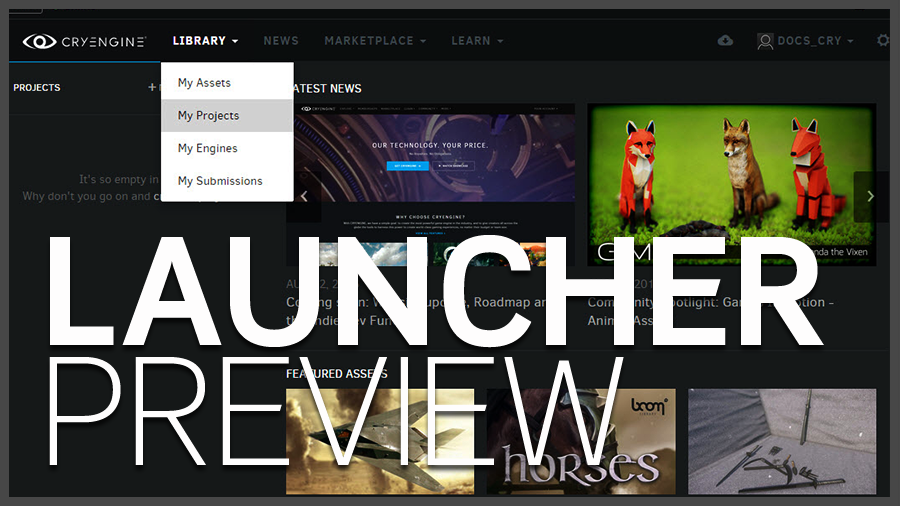
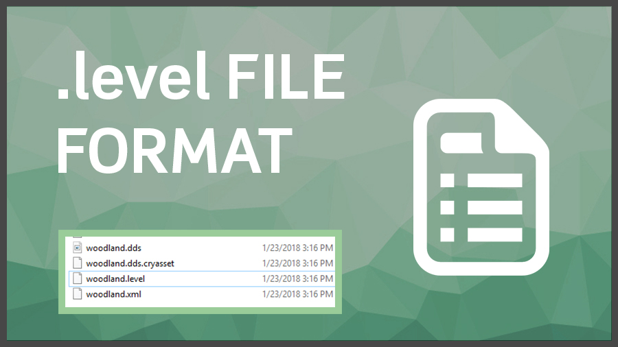
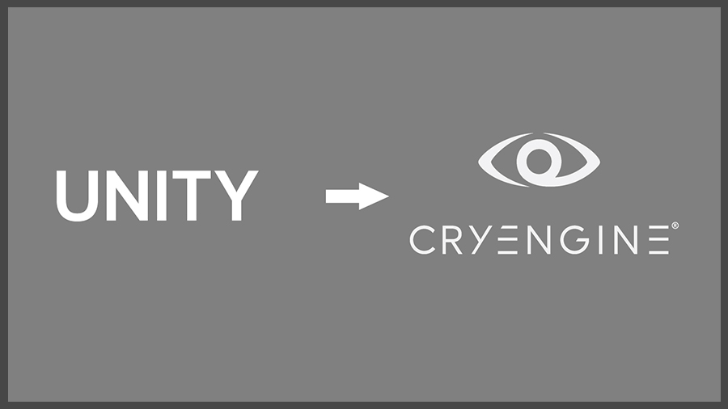
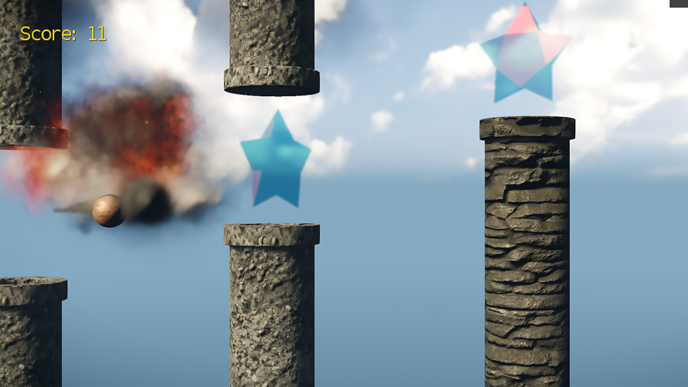
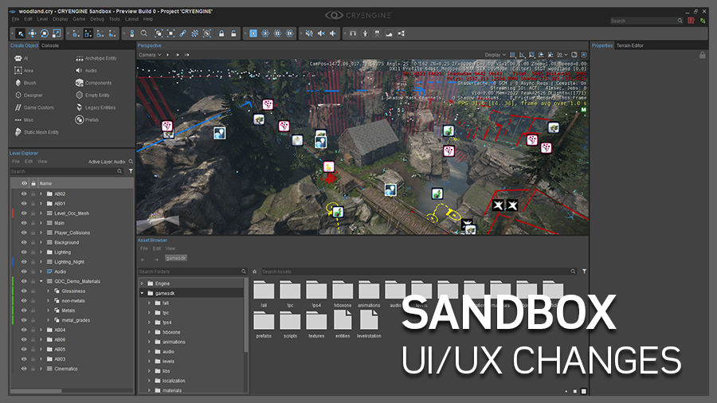
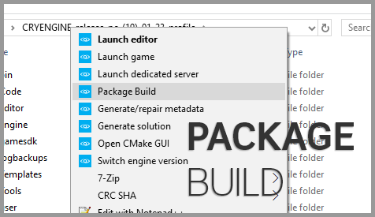
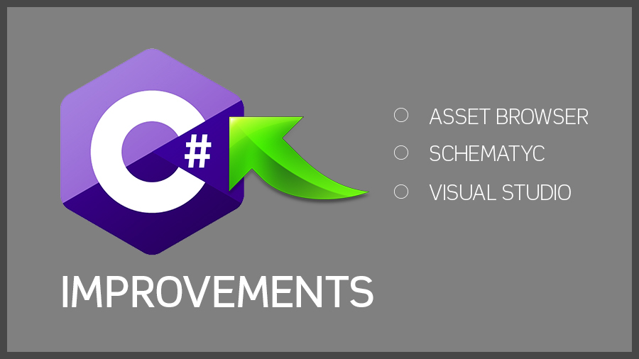
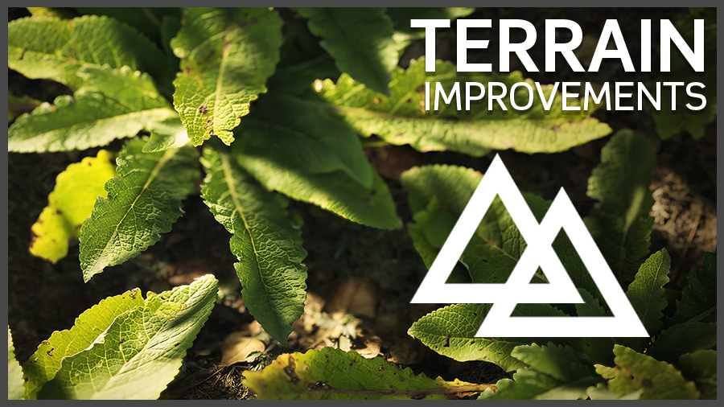
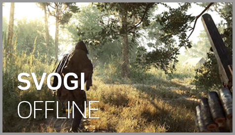

5.5 Обзор
Добро пожаловать в наше последнее крупное обновление — CRYENGINE 5.5. Мы разрабатываем версию 5.5 совместно с Hunt:Showdown в нашей студии во Франкфурте и очень надеемся, что пользователи получат доступ к различным исправлениям и улучшениям, которые перешли в основную ветку разработки Hunt. Наряду с этими улучшениями мы добавили несколько новых функций и перенесли различные сущности из устаревшего кода GameSDK в новые компоненты.
В общей сложности мы внесли более 1600 улучшений и исправлений и представили несколько новых функций в CRYENGINE 5.5, в том числе; Совершенно новый формат файла .level — это значительно упрощает совместную работу команды и позволяет файлам уровней существовать в любом месте каталога вашего проекта. Команда разработчиков также обновила систему ландшафта, добавив в нее все новые кисти смещения и улучшенное смешивание материалов, а также новую функцию, которая позволяет использовать карты высот размером менее 1 метра. Мы также добавили более глубокие функциональные возможности C#, предоставив их Schematyc для сигналов и функций. Мы также упростили создание сценариев C#, позволив пользователям создавать и редактировать сценарии C# и динамически обновлять их внутри самого браузера.
Для пользователей Unity мы создали руководство по миграции, которое поможет перенести код и ресурсы с Unity на CRYENGINE. Охвачено множество тем, касающихся анимации и общей настройки ресурсов, включая подробные описания сравнения кода, которые помогут вам освоить знакомый рабочий процесс. Сюда включен простой пример шутера, который поможет пользователям приступить к работе с фрагментами кода и проникнуть в движок быстрее, чем когда-либо.
Еще одна тема, которая порадует и покажет прогресс в области доступности, — это совершенно новая документация C++ и программирование Sandbox с выпуском исходного кода редактора. Имея доступ к этим порталам, вы теперь сможете повысить качество своей игры и упростить разработку с помощью индивидуального пользовательского интерфейса редактора. Это совпадает с предстоящим проектом long по полному пересмотру документации в руководстве пользователя, на завершение которого потребуется время, но его стоит показать, чтобы получить отзывы сообщества о структуре и читабельности. Подчеркнем, что мы будем стремиться очистить документы с включенной иерархией в рамках предварительной версии, поэтому ее следует воспринимать как «бета-доступ» к нашим планам на этом фронте.
Наконец, в ответ по многочисленным запросам сообщества CRYENGINE на вводный/начинающий курс CRYENGINE мы предлагаем вам Flappy Boid, отладчик C# Visual Studio, упаковка и сборка с помощью CrySelect, SVOGI автономной вокселизации, измененного оформления Material Editor в Qt и, наконец, что не менее важно, различные Entity-компоненты для взаимодействия Rain, Water Ripples и VR. Учитывая такой разнообразный спектр обновлений и расширение поддержки платформ, не ждите, скачайте CRYENGINE 5.5 через CRYENGINE Launcher NOW!
Авторы
Мы хотели бы выразить огромную благодарность следующим пользователям за их ценный вклад в создание версии 5.5 CRYENGINE.
- Хиликс
- Шивам Мистри
- Тиаго Мораис Моргадо
- охунос
- одновспышка
Разделы
Изменения интерфейса кода
Для получения дополнительной информации. увидеть Важная информация CRYENGINE 5.5. Изменения данных и кода.
Если вы обновляетесь с CRYENGINE 5.4, прочтите эту тему: Миграция с CRYENGINE 5.4 на CRYENGINE 5.5.
Основные моменты выпуска
Предварительный просмотр через лаунчер и исходный код редактора
Мы действительно хотим сделать жизнь пользователей CRYENGINE намного проще, поэтому теперь вы можете получить предварительные версии CRYENGINE через панель запуска CRYENGINE.
Кроме того, мы также разместили полный исходный код редактора Sandbox в репозитории Github, чтобы пользователи могли его клонировать и начать настраивать работу редактора Sandbox. Зайдите в Crytek/CRYENGINE. Гитхаб репозиторий, чтобы начать создавать плагины или отправлять запросы на включение в ветку CE.
Мы с нетерпением ждем возможности увидеть имена других пользователей в списке участников выше — какой лучший способ продемонстрировать ваши новейшие плагины и продукты с помощью CRYENGINE.

Новый формат файла уровня Sandbox
Существенным изменением в CRYENGINE 5.5 является новый формат файла уровня. Эта функция была добавлена для того, чтобы редактор Sandbox был готов к будущему в рамках концепции совместного редактирования и использования систем контроля версий.
Другим аспектом этой интеграции является возможность размещать файлы уровней в любом месте каталога вашего проекта. Слои также были обновлены, чтобы обеспечить динамическое заполнение, и они больше не жестко запрограммированы внутри архива.
Наконец, ландшафт теперь виден как объект внутри редактора уровней и во всех проектах версии 5.5, и его можно добавлять или удалять, как и любой другой элемент, что обеспечивает большую модульность рабочего процесса.

Руководство по миграции Unity
В версии 5.5 мы добавили Руководство по миграции на Unity в нашу документацию CRYENGINE V. Это руководство создано, чтобы помочь пользователям Unity Engine перенести свои навыки и/или контент в CRYENGINE быстрее, чем когда-либо прежде.
В этом руководстве разработчики могут найти подробную информацию об основах структуры файлов и каталогов, а также подробное описание настроек преобразования ресурсов и экспорта для использования в редакторе Sandbox.
В руководстве разбито несколько дисциплин разработки, касающихся текстур, моделей, UI и кода, чтобы охватить самый широкий спектр тем, необходимых для функционального прототипа.
После прочтения этого руководства команда CRYENGINE уверена, что вы сможете чувствовать себя комфортно в интерфейсе редактора Sandbox при создании своей следующей разработки.

Флэппи Бойд
Flappy Boid — это наш ответ на многочисленные запросы сообщества CRYENGINE о вводном курсе CRYENGINE для начинающих. Flappy Boid был разработан как интересный способ изучить многие основные концепции разработки игр в CRYENGINE V, одновременно создавая готовую игру.
Темы включают в себя; написание сценариев игровой механики с использованием Flow Graph, удаление и изменение функций игрока GameSDK, использование и анимация камер, физики, основных движений, звука, моделирования, текстурирования, ведения счета, эффектов частиц и многого другого.
Нам очень нравится Flappy Boid, и мы уверены, что сообщество CRYENGINE отнесется к нему точно так же и превратит его в свои замечательные игры!

Обновление документации
Пользователи CRYENGINE long просили дополнительную документацию и более актуальную документацию для своих проектов. Таким образом, в версии 5.5 мы сосредоточились не только на стороне пользователя, но и на стороне программирования.
Мы усердно работали, и в версии 5.5 мы раскрываем прогресс, достигнутый в выполнении монументальной задачи по обновлению руководства пользователя для дизайнеров, художников и других лиц, использующих редактор Sandbox. Эта работа еще далека от завершения, но мы будем расширять ее и сможем объявить устаревшей всю остальную документацию к концу цикла выпуска предварительной версии.
Наконец, у нас есть полностью переработал документацию по C++, включив в нее многочисленные фрагменты кода, а также расширил документацию, включив в нее теперь портал программирования Sandbox, что совпадает с выпуском исходного кода редактора. Еще одним аспектом этого пересмотра стало правильное отображение API для справки в Confluence, а не на отдельном портале.
Справа находятся ссылки на раздел «Программирование Sandbox», документацию по C++ и ссылку на справочник по API в Confluence.
Sandbox UI/UX Изменения
Редактор Sandbox, появившийся в версии 5.5, теперь предоставляет пользователям дополнительные обновления и настройки для улучшения рабочего процесса.
Мы упростили рабочую область области просмотра, создав раскрывающийся список вкладок. В результате вы сможете видеть каждое открытое окно в пределах данной дока и, таким образом, позволяете вкладывать все в боковую панель.
Кроме того, теперь мы предоставили вам возможность контролировать расстояние до ваших помощников в окне просмотра. Это не только поможет оптимизировать вашу сцену разработки, когда на вашем уровне начинает собираться слишком много предметов/значков, но и повысит производительность за счет удаления ненужных вызовов.
Наконец, мы предоставили возможность CTRL щелкнуть значок видимости, чтобы скрыть все (одиночный режим). Это поможет вам быстро добраться до элемента, а затем вернуться к полной сцене, когда имеется сложная коллекция объектов.
Мы надеемся, что благодаря этим и нескольким другим изменениям разработка в редакторе Sandbox станет для вас проще!

Обновленные компоненты сущности
В соответствии с тенденцией для многих будущих выпусков мы добавляем в новую Entity System несколько новых и устаревших компонентов. Сущности дождя и водной ряби были перенесены из устаревших сущностей.
В дополнение к вышесказанному, в состав версии 5.5 входят новая камера VR и компонент взаимодействия - это позволит вам начать работу с VR еще проще, чем это было раньше.
Благодаря этой новой интеграции разработчики компонентов смогут настраивать геометрию, которую использует их контроллер, а также иметь возможность динамически ограничивать элементы положением контроллера при нажатии триггера.
Мы уверены, что пользователи найдут эти новые компоненты хорошим дополнением к библиотеке, и мы с нетерпением ждем возможности выпуска большего количества компонентов в будущих выпусках.

Автоматизированная упаковка и резервное копирование
Мы знаем, что в прошлом не-программистам было нелегко поделиться своим контентом CRYENGINE и упаковать его для выпуска. Итак, мы решили эту проблему и в версии 5.5 вводим функциональность сборки пакетов непосредственно в интерфейсе CrySelect. Есть варианты застройки либо по профилю, либо по выпуску и по местоположению.
Еще одно обновление Cryselect — это добавление нового инструмента резервного копирования, поэтому теперь вы можете легко создать резервную копию своего проекта перед переходом на другую версию Engine. Проще говоря, новая функция резервного копирования учитывает все общие библиотеки плагинов, ресурсы, код, решения, файлы CryProject и конфигурации.
Мы уверены, что эти новые дополнения к Cryselect действительно помогут облегчить некоторые предыдущие болевые точки, с которыми разработчики сталкивались во время миграции и выпуска своих игр.

Обновления С#
В реализации C# мы значительно расширили способы создания ресурсов C# — теперь это можно сделать непосредственно в браузере ресурсов. Эта роскошь позволяет вам просто щелкнуть только что созданный ресурс, и он откроет экземпляр Visual Studio.
Говоря о Visual Studio, пользователи C# теперь смогут выполнять отладку с помощью IDE с помощью нашего нового расширения C#. По умолчанию для нашей реализации C# требуется Mono, поэтому было написано расширение, предоставляющее это в Visual Studio (учитывая отсутствие поддержки среды выполнения Mono).
Наконец, вы заметите, что внутри реализации C# вы теперь можете предоставлять Schematyc как сигналы, так и функции для использования внутри ваших Entity-компонентов при разработке. О боже, C#, ты так быстро растешь!

Создание прокси персонажа
В течение long времени весь процесс создания персонажа считался привязанным к конкретным сторонним инструментам и недостаточно гибким для большинства производственных конвейеров.
В предыдущих версиях CRYENGINE мы видели функцию импорта анимации FBX, а совсем недавно мы разрешили настройку рэгдоллов и их совместных ограничений непосредственно в Character Tool. С помощью этой новой функции мы расширили эту гибкость, чтобы разрешить создание физического прокси непосредственно в окне просмотра Character Tool и сделать его взаимозаменяемым в производственной среде. Создание прокси-сервера не зависит от него, и он просто находится рядом с вашим файлом определения персонажа, что обеспечивает беспрепятственное редактирование и управление версиями.
Улучшения системы ландшафта
Система ландшафта становится все лучше и лучше. В нашей версии 5.5 мы представляем вам новое взвешенное смешивание материалов ландшафта — эта функция значительно улучшит смешивание текстур вашего ландшафта и обеспечит сверхреалистичный переход.
Раньше у нас не было возможности смешивать несколько материалов вместе, но в версии 5.5 мы подняли этот порог, чтобы поддерживать 3 материала. Мы также добавили поддержку юнитов меньшего размера (менее 1 метра) на местности. Пользователи могут найти эту новую настройку в настройках «Создать новый уровень» или в меню «Изменить размер ландшафта» в редакторе Sandbox.
И последнее, но не менее важное: улучшена детализация ваших карт высот. В версии 5.5 мы представляем вам новую опцию смещения в инструментах моделирования ландшафта. Это можно рассматривать как опцию штампа, которая позволяет пользователям импортировать заранее заданные формы, которые могли быть определены где-то еще, или непосредственно через данные карты высот, полученные из онлайн-ресурсов.

SVOGI Улучшения
SVOGI исторически стал большим толчком к появлению CRYENGINE и функции, которую сейчас используют и обожают почти все разработчики. Благодаря проверенному на производстве опыту и повышенному вниманию к возможности запуска SVOGI на консолях мы теперь предоставили разработчикам инструмент для кэширования SVOGI на диске и возможность вычисления GI полностью в автономном режиме.
Второе улучшение функции, о котором мы хотели бы сообщить вам, — это усовершенствование SVO теней с трассировкой лучей и то, что эту функцию можно рассматривать как альтернативу использованию кэшированных карт теней в вашей сцене. Сразу же вы увидите несколько оптимизаций и улучшений, возникших в результате этой интеграции;
- Никакой дополнительной работы над CPU
- Прозрачные тени от прозрачных предметов
- Никаких дополнительных крупных выделений карт теней на GPU.
- Мягкая полутень с небольшой потерей производительности
Мы уверены, что вы найдете эти функции действительно полезными в вашей текущей работе по разработке и что ваши сцены будут иметь правильную тональность окружения, как это было бы видно в реальной жизни.

Плагины игровой платформы
В версии 5.5 появился совершенно новый плагин Game Platform, который обеспечивает легкий доступ к распространённым платформам распространения и протоколам передачи данных. Наша цель — облегчить и ускорить публикацию контента CE на нескольких платформах, а также получить дополнительные преимущества от продвижения материалов с помощью их функций.
В настоящее время Steam и PSN практически необходимы для разработки и вывода игры на массовый рынок. Итак, в нашем новом плагине игровой платформы мы предоставили вам возможность получить доступ к множеству функций через Steamworks или PSN API. Некоторые из функций, которые большинство разработчиков найдут полезными: подбор игроков, списки лидеров и достижения, которые помогут пользователям повысить удержание клиентов.
Другая интеграция касается HTTP и новой интеграции libCURL, которая предоставляет клиентскую библиотеку передачи URL. При любой серверной работе имейте в виду эту интеграцию, поскольку она предоставляет множество функций, таких как потокобезопасность, совместимость с IPv6 и чрезвычайно быстрая работа.
Известные проблемы
- Аним: Сохранение/загрузка прерывает движение персонажа по умолчанию — примечание: только в одиночной игре).
- Сохранить: Использование «Сохранить как...» после сохранения приводит к исчезновению кистей и делает их непригодными для использования.
- Авария: Нажатие кнопки группировки, а затем несколько раз нажатие кнопки разгруппировки в свойствах приводит к сбою.
- Авария: (Обозреватель ресурсов) Переименование импортированных текстур приводит к сбою редактора Sandbox.
- Авария: Создание префаба в Level Explorer из связанного объекта приводит к сбою.
- Рендеринг: Изменение размера панели свойств приводит к повреждению рендеринга в Character Tool.
- Дизайнер: Поверхности дизайнера невидимы или мерцают в режиме редактирования и после него.
- Авария: Извлечение объектов из префаба приводит к сбою редактора Sandbox.
- Глобальный VFX: Переключение слоев нарушает работу частиц, визуальных эффектов и звука для них.
- Авария: Добавление компонента камеры к пустому объекту приводит к сбою.
- Площадь: VisArea не скрывает объекты за пределами области.
- Вещество: Создание пресета графа вещества не приводит к созданию связанных файлов текстур (diff, spec, ddna и т. д.).
- Авария: (Шаблон) Добавление компонента в EnvProbe в Schematyc или в пустой template приводит к сбою.
- Картина местности:Рисование текстуры местности не работает, если установлен флажок «Маска по высоте и наклону».
- DX12: Различные проблемы, связанные с DX12.
- Вулкан: Различные проблемы, связанные с Вулканом.
- VR: В настоящее время не работает.
- С#: Повреждение памяти может произойти после перезагрузки скриптов в Sandbox, что приведет к возможным сбоям и неопределенному поведению.
Анимация
Общая анимация
- Новое: Добавлена поддержка физических вложений с несколькими физическими частями.
- Новое: Добавлен CVar для включения «принудительного скининга» для всех вложений Vcloth.
- Новое: Реализовано сохранение позы для LOD-анимаций. Был введен новый CVar ca_ResetCulledJointsToBindPose, позволяющий контролировать, следует ли сбрасывать преобразования отбракованных суставов для привязки позы или сохранять их из последнего оцененного кадра. Поведение по умолчанию изменилось с сброса на сохранение.
- Новое: Добавлена явная настройка скорости сна для веревок персонажей.
- Новое: Добавлен CVar для рендеринга прокси-серверов вложений персонажей в игре.
- Новое: Изменения параметров движения, примененные к заблокированному пространству смешивания, теперь фиксируются на каждой итерации при цикле.
- Новое: Добавлен флаг вложения, позволяющий отключить ближайший рендеринг для каждого вложения.
- Новое: (VCloth) добавлен флаг «скрыть» для отключения симуляции и рендеринга.
- Новое: (VCloth) Улучшено отсечение усеченной пирамиды симуляции/улучшена точность переключения в режим скининга.
- Новое: (VCloth) Добавлено оформление вершин GPU (если запущено моделирование NOT).
- Новое: Добавлен CVar для принудительного применения уровней детализации анимации к персонажам (ca_ForceAnimationLod).
- Исправлено: Сбой в условиях гонки в PoseAlignerChain. Этот сбой иногда происходит при использовании выравнивания по земле IK.
- Исправлено: Аудиособытие, добавленное к анимации в Character Tool, не воспроизводится в редакторе Sandbox или в игровом режиме.
- Исправлено: 8 скинов по весу, т. е. 8 скинов с вычислением веса и 8 скиннингов с учетом веса.
- Исправлено: (Физика) Дополнительные проверки безопасности для неправильно назначенных вложений ткани персонажа.
- Исправлено: Нарушено условие проверки нуля в CharacterManager::LoadCharacterDefinition.
- Исправлено: Повреждение памяти при неправильно назначенных тканевых вложениях.
- Исправлено: Добавлена логика безопасности, позволяющая избежать повторной инициализации/очистки Vcloth в ситуациях с низкой частотой кадров.
- Исправлено: Некоторые исправления физических вложений.
- Исправлено: Потенциальный сбой из-за запроса битовой маски вместо указателя узла рендеринга.
- Исправлено: (Средство рендеринга) Сбой при выборе 8-весовой вычислительной оболочки.
- Исправлено: Добавлена возможность включения взаимоисключающих обновлений видового экрана (CT, Mannequin, LevelEditor). Доступно через Настройки -> Область просмотра.
- Исправлено: Исправлена поддержка масштаба физики персонажей.
- Исправлено: Добавлен CVar для отключения рендеринга уровня в редакторе Sandbox (если он не в фокусе). Улучшает производительность инструментов (например, CT, Mannequin) при загрузке большого уровня.
- Исправлено: LOD отрисовка персонажей.
- Исправлено: Ошибка в кеше поиска структуры каталогов: препятствовала правильному обнаружению файлов анимации при включенном режиме ca_useIMG_CAF.
- Исправлено: Анимация Blendshape с картами морщин не работает.
- Исправлено: Весовые соединения Blendshape не работают.
- Исправлено: (Компоненты) (Физика) Принудительно активировать компонент твердого тела при запуске уровня, если он «включен по умолчанию».
- Исправлено: Проблема при перезагрузке chrparams, когда предыдущие уровни LOD скелета не были очищены.
- Оптимизированный: Включайте только столкновения, близкие к началу координат, для веревок персонажей, сталкивающихся с телом.
- Изменено: В ca_debugAnimUsage добавлен дополнительный вывод отладки для отображения информации об используемых пространствах смешивания.
- Изменено: Добавлен CVar для фильтрации выходных данных отладки очереди команд анимации (ca_DebugCommandBufferFilter).
- Изменено: Добавлены примеры API для модификаторов позы и параметров движения.
- Изменено: Добавьте примеры Mannequin API.
- Изменено: Представьте пример API для ISkeletonAnim::StartAnimation.
Character Tool
- Новое: (PhysDebugger) В Character Tool (CT) добавлен внешний тестовый режим рэгдолла.
- Новое: Реализована поддержка цвета для клавиш CTimeline.
- Исправлено: Поломка интерфейса CCrc32.
- Исправлено: Множественные проблемы с панелью ресурсов, вызванные тем, что System::explorerData не заполняется поддеревьями поставщиков при создании.
- Исправлено: Приостановленная анимация — воспроизведение больше не возобновляется при повторном выборе ее на панели ресурсов.
- Исправлено: Проблема со случайным дрожанием анимации при перетаскивании ключей событий анимации по временной шкале.
- Исправлено: Проблема с анимацией персонажа, которая начинает воспроизводиться при изменении различных свойств (даже если временная шкала находится в состоянии паузы).
- Исправлено: Виджет временной шкалы не отображает свои клавиши точно в их логическом положении. Ширина ключа временной шкалы по умолчанию изменена на 16. Предотвращено, чтобы временная шкала в Character Tool всегда сбрасывала масштаб до полного диапазона анимации при добавлении или изменении ключей.
- Исправлено: Реализовано правило сериализации, которое запрещает дублирование параметров движения в настройке blendspace.
- Исправлено: Сбой в условиях гонки сигнала/слота, вызванный тем, что в PropertiesPanel::m_propertyTree иногда пытаются вернуться к объекту с истекшим сроком действия при загрузке/перезагрузке файлов символов. Вместо этого дерево свойств теперь безопасно обновляется в последующем обработчике OnExplorerSelectionChanged.
- Исправлено: Ошибка, из-за которой раздел «Дополнительное извлечение» не работал при изменении зависимых свойств пространства смешивания. Список параметров теперь ограничен только теми, которые поддерживают извлечение.
- Исправлено: Проблема с полями ввода в разделе «Слои анимации» не обновлялись должным образом в определенных сценариях при редактировании пространств смешивания.
- Исправлено: Улучшена сериализация переопределений параметров в разделе «Примеры». Размер полей значений был скорректирован. Добавлены метки с названиями соответствующих параметров. Переопределения значений теперь правильно ссылаются на типы своих параметров по идентификаторам, а не по индексам, и сохраняются при изменении зависимых свойств пространства смешивания, чтобы смягчить различные неинтуитивные варианты поведения.
- Исправлено: Проблема со свойствами слоя анимации и свойствами пространства смешивания, отображающими разные имена для одних и тех же параметров. Удалены дублированные сопоставления параметров/имен. Удален флаг неиспользуемого параметра.
- Исправлено: Множественные ошибки сериализации макета и упрощенная логика сериализации. Размер окна теперь правильно восстанавливается после закрытия Character Tool и его повторного открытия. Сброс макета теперь восстанавливает геометрию закрепленных виджетов по умолчанию поверх их композиции.
- Исправлено: Проблема с Character Tool: не возвращается к открытым ресурсам при ответе «нет» в диалоговом окне несохраненных изменений.
- Исправлено: Проблема с устаревшими записями анимации, запрашиваемыми для предварительного просмотра параметров blendspace. Удалена пустая строка из имен параметров blendspace, чтобы устранить распространенную ошибку, возникающую при перезагрузке blendspace.
- Исправлено: Проблема в Character Tool, из-за которой индикатор измененного содержимого иногда не исчезал при сохранении.
- Исправлено: Blendspace Previewer не работает после его отстыковки от Character Tool (с включенными взаимоисключающими обновлениями видового экрана).
- Зафиксированный: Исправлен флажок «Скрыть» для Vcloth.
- Исправлено: Зависание двигателя из-за появления спам-сообщений — добавлен WarningOnce, чтобы избежать бесчисленного количества одинаковых сообщений.
- Исправлено: Время прокрутки — используйте для предварительного просмотра все активные слои анимации (аналогично «обычному» режиму воспроизведения).
- Исправлено: Улучшена сериализация псевдопримеров и аннотаций blendspace в файле Character Tool GUI:.
- Исправлено: Добавлен ползунок для изменения размера шрифта отображаемых названий соединений.
- Исправлено: Проблемы в Character Tool при перетаскивании клавиш на временной шкале.
Mannequin
- Оптимизировано: Уменьшение рендеринга напольной сетки в Mannequin с сотен вызовов отрисовки до одного вызова.
- Исправлено: Проблема с редактором Mannequin: иногда он перестает отвечать на запросы в течение длительного периода времени при наведении курсора мыши на его окно.
- Исправлено: Выбор нескольких клавиш в редакторе переходов.
- Исправлено: Проблема с некоторыми операциями редактирования в редакторе переходов, случайным образом влияющими на клавиши, которые не были выбраны пользователем.
- Исправлено: Потенциальный сбой в редакторе переходов — из-за предотвращения удаления обязательных ключей из дорожки свойств перехода. Опция удаления контекстного меню теперь правильно выделена серым цветом для всех неизменяемых клавиш.
- Исправлено: Улучшена рандомизация вариантов манекенов.
- Исправлено: Вновь созданные файлы определений тегов не отображаются в редакторе определений тегов.
- Исправлено: Сбой (при открытии редактора Mannequin).
- Исправлено: Проблемы с буфером глубины в окне просмотра Mannequin.
- Исправлено: Более яркий цвет шрифта в окне выбора фрагмента.
- Исправлено: Автоматический выбор панели фильтров поиска при щелчке левой кнопкой мыши.
- Исправлено: Диалоговое окно настроек перехода появляется за главным окном манекена.
- Исправлено: Сбой в CMannTransitionSettingsDlg::PopulateComboBoxes.
- Изменено: Отключен выбор ключа по умолчанию — выполняется при открытии редактора переходов.
AI
AI Система
- Новое: Функции отладки отрисовки получают фильтр запроса NavMesh от NavigationComponent с именем "MNMDebugQueryFilter".
- Новое: Связь островов учитывает навигационные аннотации.
- Новое: OffMeshLinks теперь также сообщает о своем конечном начале/конце triangleIDs при добавлении через мировые позиции.
- Новое: (Карта визуализации) Добавлен режим статистического анализа.
- Новое: Добавлен компонент формы разметки навигации.
- Новое: Добавлен фильтр навигационных запросов — позволяет фильтровать доступные треугольники и вычислять различные затраты на перемещение треугольников.
- Новое: Добавление поддержки разметки навигационной сетки, позволяющей использовать разные типы областей и флаги для каждого треугольника.
- Новое: Добавлено максимальное время для движения в определенном направлении для PathFollowResult.
- Новое: Добавлены базовые узлы дерева поведения «Basic_MoveToPosition», «Basic_MoveToCover».
- Новое: Добавлена карта прослушивания для компонента прослушивателя AI.
- Новое: Добавлен компонент «Обложка пользователя».
- Новое: Добавлен компонент сущности дерева поведения.
- Новое: Добавлен компонент Listener Entity с использованием AuditionMap.
- Новое: Добавлен компонент сущности Observer с использованием VisionMap.
- Новое: Добавлен компонент сущности фракции с использованием FactionMap.
- Новое: Добавлен компонент навигационной сущности.
- Новое: Добавлен интерфейс IMNMCustomPathCostComputer, позволяющий рассчитывать стоимость пути на стороне игры; распространяется по всей цепочке запросов и используется CMNMPathFinder.
- Новое: (AISystem) Расширенный флаг нового объекта, указывающий, что геометрия объекта должна быть исключена из генерации NavMesh.
- Новое: Предоставляйте информацию о границах и объемах исключений как часть параметров расширения генератора фрагментов MNM.
- Рефакторинг: Перемещение конкретного кода AI из реализации Entity в AI. Подготовка компонента для оптимизации обновлений.
- Рефакторинг: В компоненты AI добавлены базовые классы интерфейса, чтобы их можно было создавать и использовать в коде.
- Рефакторинг: Добавлен фильтр запросов NavMesh ко всем функциям навигационной системы, которым он нужен.
- Рефакторинг: Добавлен SSnapToNavMeshRulesInfo, который сообщает, как pathFinder должен привязывать начальную/конечную точки к NavMesh.
- Рефакторинг: Открыты вызовы обновления для некоторых систем AI, поэтому при их обновлении может быть более детальный контроль.
- Рефакторинг: (CoverSystem) CoverUser теперь создается для каждого объекта, зарегистрированного в CoverSystem.
- Рефакторинг: (CoverSystem и MovementSystem) В системе движения использование изменено на «способность движения».
- Рефакторинг: Добавлен обратный вызов FactionReactionChanged в FactionMap (зависимость AIObject удалена из FactionMap).
- Рефакторинг: Система предотвращения столкновений теперь независима от класса AIObject.
- Рефакторинг: Установка самой последней версии raycast по умолчанию для NavMesh.
- Рефакторинг: Перенос формационного кода из AISystem в отдельные файлы.
- Рефакторинг: Удалена зависимость AIObject от навигационной системы.
- Оптимизировано: Визуализация навигационной сетки (+ добавлен новый CVar 'ai_NavmeshTileDistanceDraw').
- Оптимизировано: По умолчанию для чистой игры отключена отладочная информация дерева поведения.
- Оптимизировано: Очистка — удалено CodeCoverage.
- Оптимизировано: Очистка - Удалена старая навигационная система.
- Оптимизировано: Очистка — удалена проходимость.
- Исправлено: Регистрация смарт-объекта как ссылки вне сети не работает после создания нового уровня.
- Исправлено: (Компоненты) Доработка и исправление компонента «Формы разметки навигации», синхронизация с экспортированными данными, возможно большее количество фигур для каждого компонента.
- Исправлено: Сбой при генерации NavMesh на плотной местности.
- Исправлено: Сбой при отмене последовательности AI, когда Actor больше не действителен.
- Исправлено: Сбой в Raycast при посещении вырожденного треугольника.
- Исправлено: Ошибка компиляции (предупреждение рассматривается как ошибка).
- Исправлено: Сбой при поиске пути: все запросы на обработку поиска пути теперь проверяются при изменении плитки NavMesh.
- Исправлено: Возможен сбой при выключении.
- Исправлено: AI Компонент сущности сохраняется с уровнями.
- Исправлено: Строим с помощью OPTION_DEDICATED_SERVER.
- Исправлено: Правильный сброс состояния Pathfinder в компоненте Pathfinding после отмены запроса на движение.
- Исправлено: Узел BT QueryTPS не проверял наличие eTPSQS_Error, поэтому в редких случаях утверждение не удавалось.
- Исправлено: AIObject.cpp не компилируется без файлов uber.
- Исправлено: Игрок больше не регистрировался в AISystem после десериализации уровня при возрождении после смерти, поэтому враг AI больше не сможет атаковать.
- Исправлено: Исправлено обновление NavMesh при размещении объектов рядом с краями плитки.
- Изменено: Система навигации инициализируется и загружается раньше (до того, как Schematyc загрузит классы сущностей).
- Изменено: Больше не происходит сбой подтверждения, когда проверяется «слишком много» физических объектов (это ограничение физической системы).
- Изменено: Поддержка старых версий NavMesh.
UQS
- Новое: Добавлена возможность разрешить игре override некоторые аспекты, которые в противном случае работают автоматически (с некоторыми настройками/поведением по умолчанию); 1: периодическое обновление, 2: периодическая отладка 3D-рендеринга, 3: источник данных по умолчанию, 4: регистрация StdLib.
- Новое: CHubPlugin теперь обновляет хаб (если это не отменено игрой).
- Новое: CHub теперь управляет логикой запуска и регистрации DataSource_XML и StdLib (если это не переопределено игрой).
- Новое: Добавлен класс менеджера настроек, позволяющий настраивать некоторые аспекты и CVar ядра UQS.
- Рефакторинг: Несколько проектов CryEngineStaticModule преобразованы в CryFileContainers - из-за потенциальных конфликтов в используемом диспетчере памяти, когда некоторые функции в .libs встраиваются, а другие нет.
- Оптимизировано: (CQueryHistory) Добавление новых записей и вставка их в нужное положение теперь выполняется примерно за время. O(1) вместо времени O(n).
- Оптимизировано: (CItemList_Writable) Добавлен CloneItems для поддержки массового копирования с помощью одного скрытого вызова функции virtual.
- Оптимизировано: (CQuery_Regular) Фаза разделения времени 3 сейчас (на случай, если мы создадим отладочную визуализацию для «много» элементов, например, для 2000 точек в трехмерном пространстве).
- Исправлено: (Инспектор истории) Сбой при нажатии «Очистить историю».
- Исправлено: Для CDebugRenderPrimitive_Text::Draw был установлен eDrawText_800x600 - это противоречило недавним изменениям IRenderAuxGeom (текст затем рисовался в нечетных местах).
- Исправлено: CItemListProxy_Writable<>::CloneItems использовал нетипизированные указатели.
- Исправлено: (CQueryManager) CTimeValue использовал неверную единицу времени для сравнения, чтобы обнаружить превышение бюджета времени.
- Исправлено: (CQuery_Regular) Подсчет кадров для 1-й фазы ввел в заблуждение (всегда говорилось «1 кадр», даже если дальнейшие фазы могли уже выполняться в этом самом первом кадре).
- Исправлено: (CQueryHistoryInGameGUI) Историей больше нельзя было управлять с помощью клавиш клавиатуры во время игры.
- Исправлено: У CQuery_Regular::UpdateDeferredTask было утверждение, которое не следовало включать.
- Исправлено: CVariantDict::AddOrReplaceFromOriginalValue больше не вызывает обработанного сбоя, если плагин UQS не загружен.
- Исправлено: Отладочный рендеринг AABB сущности был нарушен.
- Исправлено: Изменены все места, которые по-прежнему полагались на имена элементов вместо GUID элементов; добавлена концепция типа запроса по умолчанию через UQS::Core::IUtils::GetDefaultQueryFactory при создании нового запроса в редакторе Sandbox.
- Изменено: Добавлен новый CVar "uqs_printTimeExcessWarningsToConsole" для подавления вывода на консоль предупреждающих сообщений из-за превышения времени.
- Изменено: Добавлены маркеры профиля в разных местах.
- Изменено: Теперь показывает, является ли оценщик «дешевым» или «дорогим».
- Изменено: (CQueryBase) Измерения времени стали более точными.
- Изменено: Добавлено улучшенное обнаружение, предупреждающее о превышении бюджета времени запроса.
- Изменено: (Query_Regular) Было запущено слишком много циклов отложенной оценки, когда окончательный набор результатов уже потенциально был известен (что могло привести к выполнению ненужной работы).
- Изменено: (Инспектор истории) Теперь в заголовке окна также отображается имя файла загруженной истории.
Аудио
Обновления промежуточного программного обеспечения
- Обновлено до Fmod Studio 1.10.04.
- Обновлено до Wwise SDK v2017.2.2, сборка 65553.
- Обновлено до Fmod Studio API версии 1.10.02.
- Пространственный преобразователь Oculus для Wwise обновлен с версии 1.17.0 до 1.20.0.
Аудио Общие
- Новый: Параметр звука и реализация переключателя для микшера SDL.
- Новое: Добавлен компонент окклюзии.
- Новое: Добавлен компонент среды.
- Новое: Добавлен компонент предварительной загрузки.
- Новое: Добавлен компонент прослушивателя и исправлен прослушиватель для ModelViewPort.
- Новое: AudioSpotComponent теперь имеет свойство случайного смещения.
- Новое: AudioSpotComponent теперь работает правильно, когда к сущности добавляется несколько экземпляров компонента.
- Рефакторинг: Удален класс регистратора и возложена ответственность за обработку аудиосистемы на аудиосистему. В результате появился новый метод интерфейса IAudioSystem::Log. Соответственно обновлены все реализации, чтобы вместо этого использовать новый Cry::Audio::Log.
- Рефакторинг: Удален AudioAreaComponent.
- Оптимизировано: Убрано ограничение в 10 мс для обновления элементов управления скоростью объекта — теперь оно синхронизируется с внешним потоком.
- Оптимизировано: AudioObjectManager теперь вычисляет конкретные данные прослушивателя, которые необходимы аудиообъектам и их процессорам распространения.
- Оптимизировано: Слушатели теперь используют deltaTime, рассчитанный в аудиосистеме, для расчета своего логарифмического затухания до нуля.
- Оптимизировано: Удален параметр deltaTime из метода CryAudio::Impl::IImpl::Update, поскольку он не использовался/не был полезен для реализаций.
- Оптимизировано: Удалена устаревшая CVar s_TickWithMainThread.
- Оптимизировано: Если внешний поток упадет ниже 30 кадров в секунду, аудиопоток отключится и останется на уровне 30 кадров в секунду.
- Оптимизировано: В целом оптимизировано выполнение аудиосистемы путем грубой синхронизации с проходом внешнего потока — это оптимизирует запрос окклюзии, поскольку он не выдает так много запросов raycast.
- Исправлено: Реализация Wwise — плагин реверберации свертки не загрузился должным образом.
- Исправлено: Теперь примите во внимание, должны ли результаты окклюзии накапливаться или нет во время самого первого прогона пробы.
- Исправлено: Аудиопрослушиватели теперь обновляют свое имя, если имя объекта-владельца было изменено.
- Исправлено: Параметры не обновлялись в Fmod 1.10.02.
- Исправлено: В реализации промежуточного программного обеспечения добавлены отсутствующие предупреждения о неизвестных тегах XML.
- Исправлено: Добавлены отсутствующие предупреждения для дублирующихся переключателей и параметров.
- Исправлено: Ложные предупреждения об ошибках - из-за пустых соединений триггера "do_nothing". Чтобы предотвратить это, добавлен класс CDoNothingTrigger и триггеры выполнения на CATLTriggerImpl вместо CATLAudioObject.
- Исправлено: Абсолютное затухание скорости аудиообъекта не было передано в его параметр absolute_velocity.
- Исправлено: (Рендерер) Дополнительный рендеринг аудио (проблема с мерцанием).
- Исправлено: SExecuteTriggerData ctor неправильно перенаправил объект ID для определения текущей среды.
- Исправлено: Ошибка, из-за которой реализация Wwise неправильно устанавливала глобальный объект и идентификаторы прослушивателя.
- Исправлено: Сбой при завершении работы из-за висячего файла cookie Wwise во время обратного вызова EndOfEvent.
- Исправлено: Сообщение об ошибке при остановке событий в реализациях Fmod или SDL_mixer.
- Исправлено: Ошибки обнаружил SCA.
- Исправлено: Добавлены отсутствующие вызовы отмены регистрации в недавно измененные и добавленные звуковые переменные.
- Исправлено: Ошибка, из-за которой AreaAmbienceSound не запускается при телепортации в эту область.
- Исправлено: Удален флаг ENTITY_FLAG_EXTENDED_AUDIO_DISABLED в IEntity — вызывал ошибку, из-за которой звук не останавливался, если флаг был установлен во время воспроизведения звука.
- Исправлено: Ошибка, из-за которой ListenerComponent продолжает слушать звуки, когда настройка неактивна.
- Исправлено: Глобальные изменения не были применены в Wwise 2017.1.0.
- Исправлено: Включайте поддержку HRTF на базе Oculus, только если присутствует Oculus SDK.
- Исправлено: Удалены некоторые методы интерфейса из интерфейса IAudioSystem.
- Исправлено: Файловый монитор в ACE.
- Исправлено: Утверждение, при котором дисплей отладки пытался получить доступ к значению adaptiveOcclusion до того, как оно было определено.
- Исправлено: Фильтры отладки не работали с отладочным текстом аудиообъектов — теперь они работают как отладочная информация диспетчера аудиособытий и диспетчера аудиообъектов, включая поведение голоса virtual, когда установлен s_ShowActiveAudioObjectsOnly.
- Исправлено: Изменение значений AudioSpot, используемых в Schematyc Entity - переход в игру и выход приводит к сбою.
- Изменено: Обновлено до Fmod Studio 1.10.04.
- Изменено: Обновлено до Wwise SDK v2017.2.2, сборка 65553.
- Изменено: Компонент Audio Listener получил имя родительской сущности (это смутило людей). Однако базовый объект Listener, который теперь называется «Прослушиватель аудио», по-прежнему содержит следующий формат именования для целей отладки: «audio_listener_<entityname>_<entityId>».
- Изменено: Пространственный преобразователь Oculus для Wwise обновлен с версии 1.17.0 до 1.20.0.
- Изменено: В журнал измерений синтаксического анализа добавлен комментарий вместо предупреждения.
- Изменено: Удалена временная метка из сообщений аудиожурнала, поскольку она была лишней.
- Изменено: Уточнены операторы для IAudioSystem::ExecuteTrigger и IAudioSystem::ExecuteTriggerEx в документации по интерфейсу.
- Изменено: Обновлено до Fmod Studio API версии 1.10.02.
- Изменено: Удалена устаревшая переменная CVar "s_AudioProxiesInitType".
- Изменено: Добавлена возможность устанавливать плоскость окклюзии прослушивателя через CVar s_ListenerOcclusionPlaneSize. Размер самолета по умолчанию увеличен с 15 см до 100 см.
- Изменено: CVar аудиозаписи переименован с s_AudioLoggingOptions на s_LoggingOptions.
- Изменено: Запись звука теперь включена по умолчанию, если для s_LoggingOptions установить значение abc.
- Изменено: Перемещена переменная CVar "s_DebugDistance" в блок кода только для рабочей версии — она не требуется в релизных сборках.
- Изменено: Представлена переменная CVar "s_AccumulateOcclusion", которая позволяет изменять способ обработки значений окклюзии, встречающихся при рейкасте. Поведение по умолчанию было и будет накапливаться, что означает, что значение CVar по умолчанию равно 1. Если отключено, учитывается только самое высокое значение.
- Изменено: Названия значков аудиокомпонентов изменены в соответствии с тем же соглашением об именах.
- Изменено: Компонент области теперь может выбирать между прослушивателями звука и объектами, запускающими область.
- Изменено: CVar "s_ShowActiveAudioObjectsOnly" переименован в "s_HideInactiveAudioObjects".
- Изменено: На лучи затенения влияет фильтр отладки объекта.
- Изменено: Автономные файлы объектов рисования теперь называются «s_DrawAudioDebug j» (было «i»).
- Изменено: Функция Draw Occlusion Rays теперь называется «s_DrawAudioDebug i» (было «h»).
- Изменено: Отрисовка меток лучей окклюзии теперь имеет вид «s_DrawAudioDebug h» (было «g»).
- Изменено: Добавлен «s_DrawAudioDebug n» для применения фильтра, а также для отладочной информации неактивного объекта.
- Изменено: Добавлен «s_DrawAudioDebug m», чтобы скрыть информацию о памяти аудиосистемы.
- Изменено: Отдельное отображение значения расстояния от метки в отладочной информации аудиообъекта (расстояние — «s_DrawAudioDebug g»).
- Изменено: Отображается вся включенная отладочная информация объекта (если хотя бы один тип информации соответствует s_debugFilter).
- Изменено: Команда «s_SetRtpc» переименована в «s_SetParameter».
- Изменено: Обновлено форматирование информации об отладке звука.
- Изменено: Добавлено цветовое кодирование к отладочной информации аудиообъекта.
- Изменено: Отображение текущих значений фильтра отладки, радиуса и параметра рисования в верхней части информации об отладке.
- Изменено: Удалены устаревшие переменные CVar "s_AudioTriggersDebugFilter" и "s_AudioObjectsDebugFilter".
- Изменено: Добавлена переменная CVar "s_DebugFilter", которая работает со всеми типами информации отладки звука.
- Изменено: Добавлен CVar "s_DebugDistance" для ограничения расстояния прорисовки отладочной информации аудиообъекта.
Редактор управления звуком
- Новое: Изменена структура папок аудиоресурсов и файлов ACE XML. Каждое промежуточное программное обеспечение записывает свои данные в свои собственные файлы ACE.
- Новое: Добавлен файловый монитор для файлов ACE, аудиоресурсов и проектов промежуточного программного обеспечения.
- Новый: Запретите переименование, перемещение и удаление элементов управления по умолчанию.
- Новое: Добавлены элементы управления по умолчанию для приостановки и возобновления всех звуков.
- Новое: Добавлены действия «пауза» и «возобновление» для событий Fmod Studio и SDL Mixer.
- Новое: Добавлено время нарастания и исчезновения для событий SDL Mixer.
- Новое: Параметр звука и реализация переключателя для микшера SDL для управления громкостью событий.
- Новое: Добавлена поддержка VCA Fmod Studio.
- Новое: Добавлено свойство описания для библиотек, папок и элементов управления звуком.
- Новое: Добавлена фильтрация атрибутов.
- Новое: На панель управления звуком добавлены значки и подсказки для элементов, не имеющих подключений, и их родителей.
- Новое: На панель управления звуком добавлены значки и подсказки для библиотек, папок и переключателей, которые не содержат элементов управления звуком.
- Новое: Показать/скрыть пункты меню кнопки «Добавить» в зависимости от текущего выбора.
- Новое: в меню кнопки «Добавить» добавлен пункт «Состояние».
- Новое: Состояние можно создать, поместив параметр промежуточного программного обеспечения или VCA на переключатель.
- Новое: Добавлена сортировка в виде дерева.
- Новое: Родительские элементы недопустимых соединений теперь также обозначаются, что упрощает поиск ошибок.
- Новое: Добавлена возможность создать родительскую папку для текущих выбранных системных элементов управления.
- Новое: Добавлены параметры контекстного меню для загрузки и выгрузки запросов предварительной загрузки. Доступно только для глобальных неавтозагруженных предварительных загрузок.
- Новое: Добавлены параметры контекстного меню для развертывания и свертывания выбранных элементов.
- Новый: добавлена опция контекстного меню для выбора системных элементов управления из подключенных элементов управления промежуточного программного обеспечения.
- Новое: Добавлена опция контекстного меню для выбора элемента управления промежуточным программным обеспечением на панели подключений.
- Новое: Добавлена опция контекстного меню для открытия папки, содержащей файлы (для элементов промежуточного программного обеспечения), содержащих файлы на диске.
- Новое: Выполните аудио-триггер по щелчку мыши, удерживая double.
- Новое: Добавлена кнопка обновления аудиосистемы.
- Новое: Добавлена стыковка окон.
- Исправлено: Сбой при переключении промежуточного программного обеспечения после закрытия ACE.
- Исправлено: Сбой при закрытии и повторном открытии ACE при выбранном соединении.
- Исправлено: Сбой при анализе файла ACE, который содержит уже существующий параметр по умолчанию.
- Исправлено: Не удалось сохранить автоматически созданную библиотеку элементов управления по умолчанию.
- Исправлено: Элементы управления звуком не перезагружались при открытии ACE.
- Исправлено: Не удалось удалить файлы записи protected.
- Исправлено: Пустые библиотеки не удалось сохранить.
- Исправлено: Элементы управления по умолчанию не могли быть сохранены в совершенно пустых проектах.
- Исправлено: При переименовании библиотеки или папки предупреждение при перезагрузке без сохранения не появлялось.
- Исправлено: Соединения-заполнители исчезли с панели инспектора при обновлении монитора файлов.
- Исправлено: При нажатии кнопки «Сохранить» в диалоговом окне «Настройки аудиосистемы» все библиотеки ошибочно помечались как измененные (которые содержат элементы управления текущего промежуточного программного обеспечения).
- Исправлено: Измененные состояния не стали неизмененными после сохранения.
- Исправлено: Вновь созданные пустые папки не становились неизмененными после сохранения.
- Исправлено: Когда вновь созданный элемент управления удаляется без сохранения, его свойства по-прежнему будут отображаться после перезагрузки данных Audio Systems.
- Исправлено: Можно было переименовать элементы управления звуком в пустые строки.
- Исправлено: Элементы управления аудиосистемой могли быть перенесены на текущий родительский элемент (что могло бы ошибочно пометить его как измененный).
- Исправлено: При удалении запроса на предварительную загрузку не появлялось диалогового окна с просьбой обновить аудиосистему после сохранения.
- Исправлено: После сохранения измененной библиотеки, содержащей неизмененные запросы на предварительную загрузку, ошибочно открывалось диалоговое окно для обновления аудиосистемы.
- Исправлено: Можно было иметь состояния или папки с одинаковыми именами в одном родителе, перемещая их от одного родителя к другому.
- Исправлено: Перетаскивание между системными элементами управления на первом уровне иерархии внутри библиотек не работало.
- Исправлено: Элементы управления могут быть неправильно подключены, если пользователь слишком быстро удаляет данные.
- Исправлено: Многократное переименование элементов управления звуком.
- Исправлено: Многократное редактирование свойств соединения не сработало.
- Исправлено: Новые библиотеки, созданные из меню, не выбирались автоматически.
- Исправлено: Сброс типа элемента управления: фильтрация выполняется правильно, когда новый элемент управления звуком добавляется во время активной фильтрации, поэтому новый элемент управления выбирается автоматически.
- Исправлено: Элементы управления разных типов не могут иметь одно и то же имя.
- Исправлено: Состояния и папки с разными родительскими элементами не могут иметь одинаковые имена.
- Исправлено: Установка текущего значения свойства соединения помечала его как ошибочно измененное.
- Исправлено: Состояния соединения не обновлялись при изменении пути к проекту промежуточного программного обеспечения.
- Исправлено: Изменение свойства соединения укажет в UI, что соединение больше не выбрано.
- Исправлено: На панели свойств не отображались подключения выбранного системного элемента управления после его закрытия и повторного создания.
- Исправлено: Контекстное меню «Удалить подключение» на панели подключений появлялось, даже если подключение не было выбрано.
- Исправлено: Добавление нового соединения с помощью перетаскивания происходило медленно.
- Исправлено: Триггеры отключения и включения звука не работали, если пользователь запускал их напрямую.
- Исправлено: В режиме редактирования можно было выполнить триггер, удалить элемент управления и сохранить библиотеки.
- Исправлено: Текстовый фильтр на панели управления промежуточным программным обеспечением не расширял иерархию совпадающих элементов.
- Исправлено: Путь к проекту в настройках теперь можно изменить только для промежуточного программного обеспечения, в котором есть проекты.
- Исправлено: Неподдерживаемые элементы управления аудиосистемой могут быть добавлены выбранной реализацией промежуточного программного обеспечения.
- Исправлено: SDL Свойства подключения «запуск» микшера отображались, даже если тип действия не был «запуск».
- Исправлено: SDL Элементы управления микшером не обновили статус своего подключения после удаления всех подключений.
- Исправлено: SDL Миксер Максимальное расстояние затухания могло быть меньше минимального расстояния затухания.
- Исправлено: Неправильная индикация количества циклов в микшере SDL.
- Исправлено: Консольный спам параметров по умолчанию в микшере SDL.
- Исправлено: Параметры Fmod Studio не удалось назначить средам.
- Исправлено: Папки и группы микшеров Fmod Studio всегда ошибочно помечались как неподключенные.
- Исправлено: Группы состояний и группы переключателей Wwise всегда ошибочно помечались как неподключенные.
- Исправлено: Параметры Wwise, связанные со средами, не имели свойств множителя и сдвига.
- Исправлено: Переключатели и состояния Wwise могут ошибочно подключаться к средам.
- Изменено: Переименован "RTPC" в "Параметр".
- Изменено: Принудительно использовать глобальную область для элементов управления по умолчанию.
- Изменено: Удалены внутренние элементы управления по умолчанию из XML.
- Изменено: Скройте внутренние элементы управления по умолчанию в ACE (которые не должны быть связаны с каким-либо элементом управления промежуточного программного обеспечения).
- Изменено: Автоматически выбирать и редактировать новую добавленную библиотеку, папку или элемент управления.
- Изменено: Автоматически выбирать новое соединение, добавленное путем перетаскивания на панели подключений.
- Изменено: Элементы древовидного представления сохраняют свое развернутое и выбранное состояние после обновления.
- Изменено: Сохраняйте и восстанавливайте последние выбранные соединения системных элементов управления до тех пор, пока данные не будут перезагружены.
- Изменено: При выборе системного элемента управления также выбирается его первое соединение, если ранее не было выбрано другое соединение.
- Изменено: Отметьте каждый измененный элемент управления знаком * в его древовидном представлении.
- Изменено: Кнопка «Сохранить» для элементов управления звуком активируется только после внесения изменений.
- Изменено: Кнопка «Сохранить» в настройках аудиосистемы активируется только при изменении пути проекта.
- Изменено: Кнопка «ОК» в средстве выбора ресурсов активна только в том случае, если выбран элемент управления звуком.
- Изменено: Удалена опция радиуса активности override.
- Изменено: Удалены устаревшие свойства радиуса активности из ACE UI.
- Изменено: Удалена опция «Сохранить» из контекстного меню — она вводила пользователя в заблуждение, поскольку сохраняла все библиотеки, а не только выбранную.
- Изменено: Добавлено предупреждение о несохраненных изменениях при переключении промежуточного программного обеспечения и возможность сохранить измененные библиотеки.
- Изменено: Отключите ACE UI, если не загружено допустимое промежуточное ПО.
- Изменено: Сортировка древовидного представления после переименования элемента управления.
- Изменено: Добавлено уведомление в настройках - если выбранное промежуточное ПО не поддерживает проекты.
- Изменено: Меняйте курсор мыши при сохранении и перезагрузке.
- Изменено: Кнопка настроек перенесена в раскрывающееся меню.
- Изменено: Изменено расположение диалогового окна настроек.
- Изменено: Заменены значки библиотеки и папок.
- Изменено: Сортируйте элементы управления промежуточного программного обеспечения по типу, прежде чем сортировать их по имени.
Выбор аудиоресурса
- Новое: Добавлено контекстное меню с опцией «Выполнить триггер».
- Новое: Добавлена кнопка очистки в текстовый фильтр.
- Новое: Добавлена сортировка.
- Зафиксированный: «*» отображался для измененных и несохраненных библиотек, а цвета ошибок для соединений-заполнителей.
- Исправлено: Можно было выбирать библиотеки и папки.
- Исправлено: Если открыть селектор ресурсов для другого типа элемента управления (чем раньше), ранее выбранный элемент управления может быть неправильно назначен.
DRS (система динамического реагирования)
- Новое: Действие SetGameToken не предупреждало о неправильных типах переменных.
- Новое: Улучшен UI для истории сигналов.
- Новое: Добавлена большая гибкость при установке значения GameTokens из DRS.
- Исправлено: Проблема, при которой ResponseSystem.cpp static и global инициализируют класс, определенный в ActionSpeakLine.cpp.
- Исправлено: Сбой в ResponseManager после удаления актера с сигналами, поставленными в очередь на обработку.
- Исправлено: Действие SetGameToken корректно работало только для плавающих объектов.
- Исправлено: Отсутствует флаг обратного вызова для отдельных файлов.
- Исправлено: Полоса прокрутки не работает в виджете переменных, когда активно автоматическое обновление.
Ядро/Система
Общие сведения о двигателе
- Новое: Представлен новый компонент взаимодействия VR.
- Новое: Представляем новый компонент камеры VR в масштабе комнаты.
- Новое: Переместите примитивы по умолчанию из ресурсов template в ресурсы Engine по умолчанию и используйте их в качестве объекта Mesh Component по умолчанию.
- Новое: (IArea) Добавлен IsPointInside.
- Новое: Добавлен CVar для изменения начала координат, отображаемых при прокрутке колеса мыши.
- Новое: Добавлен метод создания нового таймера с уникальным идентификатором.
- Новое: В DiskProfiler добавлена информация об использовании диска Windows API.
- Новое: (AutoTesting) Следите за цепочкой сообщений на предмет обнаружения зависаний в течение определенного периода времени.
- Новое: (AutoTesting) Режим безголового клиента.
- Новое: (CVar) Добавьте команду sys_dump_cvars, чтобы записать все CVar на диск.
- Новое: (ProfVis) Добавлен инструмент анализа потоков. Инструмент может анализировать пакет файлов кадров и искать сходство в заданном потоке с некоторыми ограничениями. Это будет полезно для анализа данных профилировщика кадров, которые мы получаем от QA.
- Новое: (ProfVis) Добавлен фильтр общего времени для каждой темы. Показывает суммарное время текущего фильтра для каждого потока.
- Рефакторинг: Очистка неиспользуемых CVar.
- Рефакторинг: Удалите старые заголовки файлов и включите защиту.
- Рефакторинг: Разъясните использование флагов/причин преобразования Entity в интерфейсах Entity, используя структуру CEnumFlags.
- Рефакторинг: Добавлен stl::find_and_erase_all_if. Удален лишний stl::append_unique.
- Рефакторинг: _smart_ptr const поддержка корректности, исправление назначения копирования, модульные тесты.
- Рефакторинг: Извлечен код триангуляции полигона из WaterVolumeRenderNode в класс TPolygon2D в GeomQuery.h. Расширенная функциональность CArea Shape для вычисления боковых нормалей и разрешения открытых фигур (только для генерации случайных точек).
- Рефакторинг: Используйте CryVariant в ScriptAnyValue.
- Рефакторинг: Sleep заменен на CrySleep, где это возможно.
- Оптимизировано: Рефакторинг события и обновлений Eentity для улучшения производительности примерно в 1,5–2 раза — лучшее масштабирование со многими компонентами Entity.
- Оптимизировано: Удалите неиспользуемый диспетчер таймаутов.
- Оптимизировано: (BootProfiler) Удалить размер блока с 356 байт до 80 байт. Не выделяйте фиксированную строку для аргументов заранее, поскольку большую часть времени она не используется. При 4680 записях на пул экономится ~1,3 МБ... при более чем 900 пулах, активных только при загрузке, это существенно экономит.
- Оптимизировано: (Yasli) Используйте строку стека для повышения производительности (ускорьте время запуска редактора Sandbox на 90 мс).
- Исправлено: Случай, когда замена компонента сущности оставит висячий указатель в прослушивателях обновления.
- Исправлено: Каждое зарегистрированное событие столкновения требует поиска прокси-сервера сценария (перебор всех компонентов) как для исходных, так и для целевых объектов.
- Исправлено: Новые компоненты больше не могут получать немедленные события столкновения.
- Исправлено: Группы карт действий могут override иметь одно и то же название действия.
- Исправлено: Потенциальный сбой при сортировке прослушивателя событий Entity.
- Исправлено: Проблема, из-за которой компоненты могли находиться в двух разных категориях редактора с одинаковым именем.
- Исправлено: Проблема, из-за которой компоненты нельзя было создать с помощью базового интерфейса ID.
- Исправлено: Разыменование нулевого указателя при использовании китайского IME в Windows 10.
- Исправлено: Компоненты, использующие один и тот же базовый адрес при загрузке с диска.
- Исправлено: Компоненты, загруженные с диска, инициализируются неправильно.
- Исправлено: Восстановленные части = установка для хрупких объектов.
- Исправлено: Клавиши Windows отключены по умолчанию — используйте g_disableWinKeys=1, чтобы вернуться к предыдущему поведению.
- Исправлено: Отсутствует отражение света для точечных источников света.
- Исправлено: Утвердить уникальность/необязательность кода сериализации yasli smart_ptr.
- Исправлено: Удалить самоназначение.
- Исправлено: Стоимость-корректность строки.
- Исправлено: ProcessEvent не передает событие как ссылку на const.
- Исправлено: Слоты, содержащие символы, смещаются матрицей Entity, а не слотом Entity, что приводит к тому, что bbox присутствует в неправильной точке.
- Исправлено: Унаследованные легкие сущности, парящие над землей при перетаскивании на уровень.
- Исправлено: (Курсор UI) Сделайте курсор мыши изменяемым с помощью CVar.
- Исправлено: Конструкторы копирования счетчика ссылок должны сбросить ref в 0.
- Исправлено: Невозможность повторно активировать компонент Particle без перезагрузки, если частица была отключена по умолчанию.
- Исправлено: Изменение класса тома не приводит к правильному обновлению тома игры.
- Исправлено: Отсутствует настройка свойства при преобразовании игрового тома в другой тип игрового тома.
- Исправлено: Меши и примитивные компоненты используют неправильные идентификаторы слотов Entity.
- Исправлено: Объекты схемы не запускают узел запуска при динамическом создании после начала игрового процесса.
- Исправлено: Значок «Открыть редактор» не отображается рядом с полями частиц.
- Исправлено: Невозможность указать материал для компонентов геометрии.
- Исправлено: (CECR) Сбой, вызванный неправильным отключением неактивных камер.
- Исправлено: Вход контроллера не работает с компонентом ввода по умолчанию.
- Исправлено: Панель PS4 не работает на машинах с Windows.
- Исправлено: Quat не был правильно инициализирован в отладочных сборках.
- Исправлено: PoolAllocator выбирал выравнивание без степени двойки для некоторых размеров шрифта.
- Исправлено: Новые компоненты на основе Schematyc, основанные на устаревшей системе IID — функция IID больше не требуется для новых компонентов.
- Исправлено: Регистрация пакета Schematyc не отменяется — предотвращается возможный сбой при завершении работы.
- Исправлено: Проблема, из-за которой во время загрузки компоненты создаются и инициализируются последовательно, а не создаются в одном пакете и затем инициализируются.
- Исправлено: Невозможность надежного запроса других компонентов схемы внутри вызова Initialize. Теперь мы добавляем компоненты объекта схемы, не инициализируя их, а затем снова просматриваем все компоненты, чтобы инициализировать их в добавленном порядке.
- Исправлено: HeapAllocator. Теперь массив выравнивает начало и конец выделения для безопасного доступа к SIMD.
- Исправлено: ENABLE_GFX_VIDEO подборка.
- Исправлено: Пусть Entity будет деактивирован после изменения маски события компонента.
- Исправлено: IEntity::MoveSlot заставил игнорировать себя как цель.
- Исправлено: Скриншоты делаются с разрешением экрана вместо разрешения рендеринга в редакторе Sandbox.
- Исправлено: CSystem::GetRootFolder возвращает пустую строку.
- Исправлено: FrameProfiler переключатель.
- Исправлено: Sandbox ЭСоздание скриншота в диторе.
- Исправлено: Windows 7 переходит в спящий режим при использовании геймпада PS4.
- Исправлено: CBinaryXmlNode::getAttr и CXmlNode::getAttr не совпадали и сообщали разные значения в зависимости от того, был ли файл прочитан из двоичного файла или потерянных местоположений, а также методы теперь будут возвращать «false», если запись существовала, но по сути была пустой строкой.
- Исправлено: (Сборка) В копии OrbisLauncher после сборки используется неправильный каталог.
- Исправлено: (Bootprofiler) Убедитесь, что время начала берется при инициализации блока записей, а не раньше (возможно выделение целого сегмента записей).
- Исправлено: (Ясли) Исправлено повреждение кучи.
- Изменено: Переместите EEntityEvent в namespace для документации Doxygen, отметьте глобальное событие namespace как устаревшее.
- Изменено: Переместите кнопку создания кубической карты в верхнюю часть компонента Environment Probe.
- Изменено: Добавлены примеры API для предварительного рендеринга.
- Изменено: Представьте примеры API для функций IEntity::Load*.
- Изменено: Представьте дополнительные примеры API.
- Изменено: Добавьте опцию «applyImmediately» в CAdvancedAnimationComponent::SetCharacterFile, всегда загружайте новый символ с диска.
- Изменено: Очистка CEntityComponentLuaScript.
- Изменено: Внедрите модульные тесты для проверки допустимого мира сущностей и локальных преобразований.
- Изменено: Добавьте новое событие ESYSTEM_EVENT_LEVEL_LOAD_ENTITIES — полезно для создания сущностей перед загрузкой с диска.
- Изменено: Поддержка сравнения между CryStringT и CryStackStringT.
- Изменено: Исправьте устаревшие реализации расширения игровых объектов, чтобы указать маску события.
- Изменено: Добавлено свойство скорости анимации в компонент Animated Mesh.
- Изменено: Удалите мертвые помощники для получения классов и сравнения идентификаторов Entity по классам.
- Изменено: Обновите README.md, чтобы пользователи могли обращаться к документации CMake вместо WAF.
- Изменено: Добавлены функции Spawn и Remove Entity для использования Schematyc.
- Изменено: Очищен вывод журнала анализа CPU.
- Изменено: (XBox) Повторно включено использование 7-го ядра для Durango.
- Изменено: Разрешен просмотр файлов .log во время их использования в Windows.
- Изменено: (XBox) XBox One XDK обновлен до последней версии (17 ноября).
- Изменено: (AutoTesting) Разрешить настройку сторожевого таймера в cfg.
- Изменено: (AutoTesting) Система модульного тестирования превращает неудачные подтверждения и фатальные ошибки в провал текущего теста.
- Изменено: (AutoTesting) Исправлена ошибка отложенной загрузки демо-версии.
- Изменено: (AutoTesting) Неудачный модульный тест активирует точку останова отладки.
- Изменено: (AutoTesting) Уточнить содержание отчета о модульном тестировании на предмет равенства/прибл. сравнение значений, добавление недостающих комментариев и документации.
- Изменено: (AutoTesting) Исправлена проблема: демонстрация времени не запускается, когда команда ставится в очередь после загрузки карты.
- Изменено: (AutoTesting) Улучшено форматирование вывода CryUnitTest для лучшей поддержки указателей.
Общий
- Новый: Представляем новый модуль CryAPIExamples для компиляции фрагментов Doxygen.
- Рефакторинг: Устаревшие макросы, создающие GUID из двух целых чисел.
- Рефакторинг: Унифицируйте преобразования CryGUID из строки и в строку.
- Рефакторинг: Разрешить создание спецификации сериализации enum для уже объявленных перечислений.
- Рефакторинг: Удалить помощника CryGUID.
- Исправлено: Неправильная проверка типа возвращаемого значения после вызова GetFileAttributesExW.
- Зафиксированный: Шаблон Singleton, использованный в CryCommon, привел к появлению одного экземпляра на DLL.
- Исправлено: Исправлена обработка классов enum меньшего размера, чем sizeof(int).
- Изменено: Документ IPersistentDebug.
- Изменено: Документ IProjectManager.
- Изменено: Переместите интерфейс менеджера карт действий в CryCommon.
- Изменено: SNetObjectId не получает комментариев Doxygen.
- Изменено: Переместите интерфейсы Mannequin в CryCommon для поддержки Doxygen, задокументируйте общие типы.
- Изменено: IStatObj не использует правильные комментарии в стиле Doxygen.
- Изменено: Добавьте значения по умолчанию в структуру SFogVolumeProperties.
- Изменено: INetContext, IRenderer и IPhysicalWorld не создают страницы Doxygen.
- Изменено: Измените определение CRY_DEPRECATED, чтобы разрешить использование с классами, используйте [[deprecated]] в случае C++ 14.
- Изменено: Добавьте конструктор копирования в CHashedString.
- Изменено: Темп. отключить неудачный тест.
Система
- Новое: (Linux) Добавлен простой скрипт Python для обработчика сбоев.
- Новое: (Linux) Разрешить переопределение версий GCC и Clang (сделано с помощью Kit в QtCreator).
- Новое: Добавлена поддержка отсрочки выполнения консольной команды до ее регистрации, используемая для команд .cryproject.
- Новое: Добавлена новая команда sys_ignore_asserts_from_module для игнорирования утверждений отдельного модуля.
- Новое: Все переменные CVar профиля перемещены в ProfileSystem.cpp, где они и находятся, члены класса переименованы в соответствии с переменными CVar и удалены ненужные коды.
- Новое: Добавлены CVars profile_row и profile_col (для позиционирования текста) и profile_min_display_ms (для настройки порога времени). Не отображать пики, если profile_peak_display = 0. Исправлена проверка высоты после очистки рендера.
- Новое: Экспортируйте BootProfiler в формат трассировки Chrome.
- Новое: Добавлен CVar sys_system_timer_resolution, позволяющий управлять разрешением системного таймера в Windows.
- Рефакторинг: Переместите рендеринг и завершение рендеринга с CryAction на CrySystem.
- Рефакторинг: Переместить начало рендеринга с CryAction на CrySystem.
- Рефакторинг: Переместите контроллер шага ручного кадра с CryAction на CrySystem.
- Рефакторинг: Переместить начало обновления на CrySystem ( DoFrame() ).
- Рефакторинг: Переместите инициализацию Engine в CrySystem, замените CryAction на модуль Engine.
- Рефакторинг: Удалите опцию, чтобы не создавать консоль.
- Рефакторинг: Удалите устаревшие FUNCTION_PROFILER, FRAME_PROFILER, STALL_PROFILER и замените их CRY_PROFILE_FUNCTION, CRY_PROFILE_SECTION, CRY_PROFILE_SECTION_WAITING.
- Рефакторинг: Исправьте орфографическую ошибку CSystemEventListner -> CSystemEventListener.
- Рефакторинг: (XBox) Удалены бесполезные проверки в CLog::CreateBackupFile и проведен рефакторинг для использования XDK API CopyFile2 в Durango.
- Оптимизировано: (JobSystem) Запускать задания, созданные для любого работника, а не только для работника. - не позволяет одному работнику получить всю работу и не иметь возможности поделиться ею с другими «голодающими» работниками. Примечание. Задания, созданные в заданиях, будут иметь приоритет немедленного выполнения (раньше это было так, однако работа не была передана другим исполнителям, как это происходит сейчас).
- Исправлено: Курсор мыши виден на альтернативной вкладке и исправлен курсор double, видимый при запуске.
- Исправлено: Блокировка окна курсора мыши Alt Tab.
- Исправлено: Командная строка не выполняется при запуске генератора шейдерного кэша.
- Исправлено: Белый список CVar больше не работает.
- Исправлено: Обработка OOM при очистке распределителя сегментов.
- Исправлено: Компиляция Linux Clang с C++14.
- Исправлено: Сбой 'SaveLevelStatistics' без загрузки карты приводит к сбою COctreeNode::GetObjectsByType.
- Исправлено: Скорость кадров в релизных сборках.
- Исправлено: Использование WhiteList без регистрации в _RELEASE.
- Исправлено: Потенциальный доступ к nullptr.
- Исправлено: Потенциальный сбой при завершении работы в коде профилирования.
- Исправлено: Модули не выгружаются при неудачной инициализации.
- Исправлено: (RC) Двигатель не запускается со специальными символами в пути.
- Исправлено: Сбой в профилировщике загрузки при выходе из редактора Sandbox.
- Исправлено: PrepareOcclusion теперь использует правильную камеру рендеринга во время заморозки.
- Исправлено: Vec3 * Matrix34 должен вернуть Vec4.
- Исправлено: UnitTest MathVector, исправленное значение допуска. Отключена векторная синхронизация через ifdef, что улучшает время компиляции.
- Исправлено: Сбой, когда строка находится в самом конце страницы памяти и следующая страница недоступна.
- Исправлено: Сбой при запуске из-за загрузки и выгрузки GameDLL во время инициализации.
- Исправлено: Несогласованная настройка параметра выделенного сервера глобальной среды.
- Исправлено: Неверное предупреждение об отсутствии конфигурации потока, когда определена только общая конфигурация.
- Исправлено: Непоследовательная поддержка автоматического режима, иногда отображающая оповещения, даже если пользователь запретил это.
- Исправлено: Окна сообщений появляются непоследовательно и на разных платформах (иногда вообще не появляются в чисто игровом режиме).
- Исправлено: Буфер обмена ломается при одновременном запуске 3 или более экземпляров CRYENGINE.
- Исправлено: Реализация ilog2 в Clang и GCC с использованием IntegerLog2 из BitFiddling.h во всех компиляторах.
- Исправлено: (Орбис) Отладочная компиляция.
- Исправлено: Запуск двигателя без проекта, когда миграция была невозможна.
- Исправлено: Невозможно выполнить консольные команды из файла .cryproject.
- Исправлено: Сбой при запуске, если файл .cryproject не существует.
- Исправлено: Невозможность загрузки .cryproject с диска в релизных сборках.
- Исправлено: Двоичные узлы XML, не поддерживающие клонирование — теперь возвращают себя, поскольку узлы в любом случае доступны только для чтения.
- Исправлено: Освобождение конвейера рендеринга при освобождении средства рендеринга.
- Исправлено: Загрузка более новых версий .cryproject приводит к полному override файла с фиктивными значениями.
- Исправлено: Ни в одном каталоге ресурсов не обнаружена ошибка при переходе с устаревшего рабочего процесса sys_game_folder на .cryproject.
- Исправлено: Движок автоматически запускался без папки проекта и/или ресурсов — теперь пользователю отображаются ошибки.
- Исправлено: Подтвердить при подключении удаленной консоли.
- Исправлено: Добавление корня движка в качестве мода pak привело к постоянному поиску файлов в корне движка, что приводило к замедлению работы и добавлению несвязанных файлов в файловые браузеры. Дополнительно добавлен псевдоним %EDITOR% pak, чтобы избежать проблем с загрузкой ресурсов редактора в будущем.
- Исправлено: Плагины не выгружаются в порядке, обратном загрузке.
- Исправлено: (PS4) Дескрипторы кубических карт.
- Исправлено: (XBox) Повышение частоты дискретизации до значения sRGB.
- Исправлено: (XBox) Понижение дискретизации по Z-цели.
- Исправлено: (XBox) Отсутствующий задний буфер очищается.
- Исправлено: (XBox) Текстуры крутятся.
- Исправлено: (XBox) Загрузка шрифтов.
- Исправлено: (XBox) Очищается масштабная форма и задний буфер.
- Изменено: Документ ISystem::GetCamera и SetCamera.
- Изменено: (Linux) По умолчанию используйте clang 3.9 и gcc 6.
- Изменено: (NoCopy) Удалите оператор, отличный от стандартного, правильно удалите оператор копирования и добавьте NoMove.
- Изменено: (Linux) Добавлено подавление предупреждений для gcc 7.2.
- Изменено: (Linux) Добавлено подавление предупреждений для clang 5.0.
- Изменено: Предотвращено беспорядочное рисование всей отладочной геометрии CPhysRenderer с включенным флагом e_DrawInFrontOn.
- Изменено: Менеджер проектов теперь поддерживает обновление .cryproject с добавлением новых плагинов по умолчанию из версий, отличных от 0.
- Изменено: Введены предупреждения в окне сообщений, если плагины не удалось загрузить.
- Изменено: Переместите IGameFramework::Run в CSystem::RunMainLoop.
- Изменено: (XBox) Убран особый случай, когда программе запуска XB1 требовалось обновить движок вручную.
- Изменено: Увеличьте разрешение таймера Windows, чтобы сократить время ожидания в сторонних API.
- Изменено: (XBox) Добавлена поддержка окна сообщений через CryMessageBox.
- Изменено: Подписывать двоичные файлы и библиотеки DLL.
- Изменено: Разрешить запуск Engine без проекта — это поведение по умолчанию при модульном тестировании.
- Изменено: (XBox One) Отключить дефрагментацию буфера и текстур.
- Изменено: PlatformOS проблема с выключением.
- Изменено: Выпуск сборки не загружает .cryproject из командной строки. Проблема.
- Изменено: (JobSystem) Создайте N-2 рабочих. Где N — количество логических ядер. Постарайтесь убедиться, что потоки Main и Render не прерываются слишком сильно.
Система сущностей
- Новое: (DefaultEntities) Добавлен компонент водной ряби.
- Новое: (DefaultEntities) Добавлен компонент дождя.
- Новое: Сериализация создания компонентов сущностей — перенос функций предыдущих игровых объектов на компоненты.
- Новое: Добавлен новый компонент двигателя: применяйте непрерывные или спорадические импульсы из определенной точки физического объекта! F. Добавьте новые компоненты транспортных средств и колес: создавайте колесные транспортные средства с помощью Schematyc.
- Новое: Добавлен новый дочерний компонент сущности: позволяет автоматически создавать другую сущность внутри класса Schematyc.
- Новый: Добавлен новый компонент «Физическая область»: позволяет моделировать ветер или подавлять гравитацию в форме.
- Рефакторинг: (CryDefaultEntiites) Переместите отраженные типы и члены в заголовки, чтобы их можно было использовать внутри сторонних шаблонов практически только для заголовков.
- Рефакторинг: Удалить глобальный приемник событий Entity — теперь предпочтительнее использовать прослушиватели на отдельных Entity при подготовке к более крупной оптимизации событий Entity.
- Оптимизировано: Улучшена производительность помощников/значков Entity Component в редакторе Sandbox.
- Оптимизировано: Используйте одно распределение для всех объектов и компонентов, загруженных из XML, в результате чего будет создан один пакет непрерывной памяти.
- Оптимизировано: Рефакторинг событий и обновлений Entity для улучшения производительности примерно в 1,5–2 раза — лучшее масштабирование со многими компонентами Entity.
- Исправлено: (DefaultEntities) В компоненте громкости тумана отсутствуют настройки.
- Исправлено: (DefaultEntities) Нарушение прав доступа при вызове Ragdollsize на CharacterControllerComponent.
- Исправлено: (DefaultComponents) Компонент сетки не сбрасывается после установки нового объекта.
- Исправлено: (DefaultEntities) У FogVolume отсутствуют некоторые атрибуты.
- Исправлено: (DefaultEntities) Сигнал OnCollision отправляет неправильный объект.
- Исправлено: (DefaultEntities) Назначенная анимация для объекта Animated Mesh не воспроизводится в окне просмотра и в игре.
- Исправлено: (DefaultEntities) Свет проектора парит над землей, когда его перетаскивают на уровень.
- Исправлено: BaseEntity Компонент C отображается в Инспекторе.
- Исправлено: Компонент ввода неправильно регистрирует несколько групп ввода.
- Исправлено: Некоторые компоненты не предоставляли Schematyc все функции.
- Исправлено: GetEntityIterator не возвращает интеллектуальный указатель, что может привести к потенциальной утечке памяти.
- Исправлено: Требуемый размер буфера Entity не учитывает компоненты из-за неправильного анализа XML.
- Исправлено: Компоненты, использующие один и тот же базовый адрес при загрузке с диска.
- Исправлено: Компоненты, загруженные с диска, инициализируются неправильно.
- Зафиксированный: Загрузка устаревшего компонента сущности привела к созданию пустого экземпляра GUID.
- Исправлено: Legacy-Light-Entities, парящие над землей при перетаскивании на уровень.
- Исправлено: Масштаб компонентов не сохраняется должным образом.
- Исправлено: Приемники удаления сущностей могут предотвратить удаление сущности во время полной выгрузки системы сущностей.
- Исправлено: Родитель сущности не устанавливается для дочерних элементов до тех пор, пока их компоненты не будут инициализированы.
- Исправлено: Случаи, когда компоненты по умолчанию отключались слишком поздно.
- Исправлено: Невозможность повернуть локальное преобразование компонента света проектора.
- Исправлено: Невозможность изменить тип компонента сетки во время выполнения.
- Исправлено: Невозможность повторно активировать компонент частиц без перезагрузки, если частица была отключена по умолчанию.
- Исправлено: В компоненте камеры отсутствуют помощники выбора.
- Исправлено: Индикатор отсутствия размера компонента зонда окружающей среды.
- Исправлено: CAdvancedAnimationComponent::SetMotionParameter не учитывает переопределения параметров движения, поступающие из систем более высокого уровня.
- Исправлено: Не отвечающие переходы фрагментов при вызове CAdvancedAnimationComponent::QueueFragment. Исправлена связанная с этим проблема с утечкой памяти.
- Исправлено: Невозможность отключить столкновения на физических примитивных компонентах.
- Исправлено: Меши и примитивные компоненты используют неправильные идентификаторы слотов Entity.
- Исправлено: CEntity::PhysicalizeSlot не передает пользовательский материал слота вновь созданной физической части.
- Исправлено: Компоненты геометрии перестают отбрасывать тени при дублировании.
- Исправлено: Сбой, вызванный висячим указателем в компоненте замены.
- Исправлено: Свойства аналогичных сущностей не могут отображаться, если они не являются копиями.
- Исправлено: Событие ENTITY_EVENT_PHYS_POSTSTEP никогда не отправляется.
- Изменено: (CryEntitySystem) Откройте IEntity::GetWorldScale.
- Изменено: (CryDefaultEntites) Измените компонент взаимодействия VR, чтобы использовать физические ограничения.
- Изменено: (CryEntitySystem) Удалить оставшуюся логику и функции сегментированного мира.
- Изменено: (DefaultEntities) Добавлено расстояние обзора для легких объектов.
- Изменено: (DefaultEntities) Добавьте опцию покоя к компоненту Ridigbody.
- Изменено: Устранена необходимость в новых компонентах сущности для определения функции IID.
- Изменено: Внедряйте модульные тесты компонентов, чтобы избежать регресса старых ошибок, которые продолжают появляться.
- Изменено: Избегайте ненужного копирования возвращаемых значений Entity.
- Изменено: Добавьте функции Spawn и Remove Entity для использования в Schematyc.
- Изменено: Исправьте недопустимые комментарии в компонентах по умолчанию.
- Изменено: Переместите хранилище сущностей из динамически выделяемого вектора в массив внутри самой системы.
- Изменено: Удалите специальную обработку событий Entity в CEntity::SendEvent при подготовке к оптимизации.
- Изменено: Удалите кеширование IEntity::GetForwardDir.
- Изменено: Выставьте ENTITY_EVENT_SPAWNED_REMOTELY так же, как IGameObjectExtension::PostRemoteSpawn.
- Изменено: Добавьте помощники IEntity для удаления первых или всех экземпляров типа Entity Component в Entity.
- Изменено: Удалить ограничение на количество символов в имени ссылки на сущность.
- Изменено: Удалите жестко запрограммированные ограничения EntityId. Теперь определяется (на основе) типов EntityId, EntitySalt и EntityIndex. Поведение по умолчанию точно такое же, как и раньше, с максимальным пределом в 65533 объекта.
CMake
- Новый: Поддержка создания примеров API без движка для автоматической компиляции.
- Новое: Используйте суффикс каталога «_release» при создании конфигурации выпуска в Visual Studio (ранее необходимо было перезапустить CMake, чтобы установить выходной каталог).
- Новое: Обновите CMake до 3.10.1.
- Новое: CMake теперь загружает SDK через Github, если загрузка невозможна.
- Новое: Поддержка перекодирования.
- Рефакторинг: Переместите обнаружение пути PS4 SDK в PS4-Clang.cmake, а не в build_meta/build_with_cmake.py.
- Рефакторинг: Добавляйте пути включения непосредственно в файлы .cmake для сборок Ninja.
- Рефакторинг: Добавьте вариант без использования uber для каждого проекта.
- Исправлено: Невозможность построить генератор шейдерного кэша из проектного решения.
- Исправлено: Плагины VR включались, когда SDK отсутствовал.
- Исправлено: Сенсорная система не создается, когда установлен PROJECT_GAMEHUNT, на всякий случай заверните в собственный namespace.
- Исправлено: Отключите ScaleformHelper при сборке DedicatedServer.
- Исправлено: Сборка с помощью OPTION_DEDICATED_SERVER в Linux.
- Исправлено: OPTION_SANDBOX отключился слишком поздно.
- Исправлено: Там, где измененные параметры CMake для Vulkan и HRTF не отражались в CMake GUI, дополнительно исправлено развертывание файлов DLL PortAudio во время выполнения.
- Изменено: Всегда включайте конфигурацию выпуска в VS, автоматически отключайте сборку редактора Sandbox.
- Изменено: Опция Expose для включения/отключения консоли разработчика в сборках выпуска.
- Изменено: Добавьте макрос для автоматического добавления источников в каталог.
- Изменено: Подписывать двоичные файлы и библиотеки DLL.
- Изменено: Добавьте параметры VS2017 в cry_cmake.
- Изменено: Измените пакетные файлы Win32 и Win64, чтобы разрешить сборку как VS2015, так и VS2017.
Общие действия
- Новое: Поддержка загрузки уровней из-за пределов папки уровней — теперь она определяется как папка с файлом level.pak внутри.
- Зафиксированный: ENTITY_FLAG_LOCAL_PLAYER реплицируется по сети.
- Исправлено: Невозможность отправлять объекты привязки в сеть, если они не содержат устаревший игровой объект.
- Исправлено: Использовать порт прослушивания лобби в качестве порта сервера (только если служба лобби правильно инициализирована).
- Исправлено: Функция ManualFrameStep не работает по сети.
- Исправлено: Сбой при установке позиции сущности во время разрушения многопользовательской игры.
- Исправлено: Сбой из-за неинициализированных значений.
- Исправлено: Обработка путей уровней в системе уровней.
- Исправлено: Выключение двигателя, когда устаревший контекст был недоступен.
- Исправлено: Сбой на выделенном сервере в отладке Mannequin из-за отсутствия средства рендеринга.
- Исправлено: Постоянная отладка не работает в редакторе Sandbox.
- Исправлено: Сохранения можно загружать без написания расширения файла в консоли.
- Исправлено: Невозможность собрать Engine+cryproject монолитно.
- Изменено: Отметить IGame, IEditorGame и IGameStartup как устаревшие.
- Изменено: Отметить IGameObjectExtension как устаревший.
Flow Graph
- Новое: Добавлен новый узел потока для получения текущих настроек окружающей среды.
- Исправлено: К узлу QueryIsInContainer нельзя присоединить несколько узлов EntityInfo.
- Исправлено: Закрытие диалогового окна портов модуля с помощью OK переключает активный Flow Graph.
- Исправлено: Модули уровней не загружаются в лаунчере игры.
- Исправлено: Сущности, чьи архетипы были удалены, перечислены в каждом Flow Graph.
- Исправлено: Модули уровня ломаются после загрузки.
- Исправлено: Вновь созданный узел нельзя отменить с помощью CTRL+Z.
- Исправлено: Быстрый выбор для FG-узлов не работает.
- Исправлено: (CECR) Сбой при использовании Entity:SpawnArchetype в новом проекте, не использующем устаревший интерфейс IGame.
- Исправлено: (CECR) Возможный сбой при получении игрового токена, если график имеет значение null.
- Исправлено: Запретите добавление объектов, которые являются частью префаба, в Flow Graph и отобразите предупреждение, если пользователь попытается это сделать.
- Исправлено: (Schematyc) Физика SetParams FG узел воздействия схемы.
Игра
- Новое: Добавлена функция, используемая для синхронизации экспортированных данных игры из пакетов уровней, когда уровень загружается в редакторе Sandbox.
- Оптимизировано: Удалите GameZero.cryproject и все ссылки на GameZero из WAF и создайте скрипты.
- Оптимизировано: Удалить старый проект GameZero, заменить его пустой игрой template.
- Исправлено: Перезагружайте формы спиленных деревьев на каждом уровне загрузки.
- Исправлено: Вылет при завершении работы после посещения многопользовательского лобби.
- Исправлено: Неработающая анимация со стационарным пулеметом.
- Исправлено: Неправильный звук воспроизводится при первом входе на карту.
- Исправлено: Где в многопользовательских играх прослушиватель звука не активировался повторно после killcam. Сущности, являющиеся прослушивателями аудио, теперь также могут создавать дополнительные аудиообъекты.
- Исправлено: Больше не пытайтесь вызвать отсутствующую функцию сценария.
- Изменено: Обновите файл .cryproject, чтобы он указывал на каталог «GameSDK».
Схема
- Новое: Добавлен компонент «Разрывное соединение».
- Новое: Добавлена новая опция «Создать для каждого клиента» для объектов Schematyc — в результате экземпляр автоматически создается каждый раз, когда клиент подключается к серверу.
- Новое: Откройте узлы Vector3 Project и Reflect.
- Новое: Откройте узлы отрицания и подписи.
- Новое: Добавлены новые функции схемы GetEntityTranform, GetEntityPosition и GetEntityRotation.
- Новое: Добавлен AudioFadingAreaComponent.
- Рефакторинг: Переместите функции Entity из базового компонента Entity в новый тип данных Entity (переименованный в EntityId).
- Оптимизировано: Разрешить мягкие зависимости для неодноэлементных компонентов.
- Исправлено: Поиск ссылок на свойства не работает.
- Исправлено: Найти все ссылки на сигналы не работает.
- Исправлено: Функция «Найти и найти все ссылки» действий не работает.
- Исправлено: Кнопка «Перейти к схеме» в дереве модульного поведения.
- Исправлено: Schematyc зависает во время подбора материала.
- Исправлено: Сбой из-за изменения порядка уничтожения после перемещения Schematyc в Engine.
- Исправлено: Компоненты сущности схемы создаются и инициализируются последовательно, а не создаются в одном пакете, а затем инициализируются после него.
- Изменено: Удалите поддержку установки необработанных элементов компонента через узел Set.
- Изменено: Удалите интеграцию Flow Graph — в настоящее время она слишком нестабильна из-за неправильной реализации событий Flow Graph.
Шаблоны
- Исправлено: Rolling Ball template не синхронизирует физическое состояние игрока по сети.
- Исправлено: Пусто и плагин template не регистрирует созданные пользователем Entity Components.
- Исправлено: (ThirdPersonShooter) Исправлена проблема со спамом в виде предупреждений, возникающая во время движения камеры, за счет увеличения инерции при переключении состояния тегов Mannequin.
- Исправлено: ReflectType на CBulletComponent во всех шаблонах.
- Исправлено: ReflectType на CBulletComponent в ThirdPersonShooter template.
- Зафиксированный: Восстановите функцию сетевой синхронизации в RollingBall template.
- Изменено: (ThirdPersonShooter) Добавлен простой фильтр сглаживания ввода данных мышью для смягчения резких движений при повороте.
Графика и рендеринг
Общий рендерер
- Новое: Добавлен новый режим отладки для отображения заклинателя теней (e_shadowsDebug 4).
- Новое: Кэшируйте шейдеры по каждому методу — позволяет избежать повторного доступа к диску.
- Новое: Режим окна без полей.
- Новое: Добавьте CVar "r_profilerSmoothingWeight", чтобы обеспечить контроль над временными значениями r_profiler для упрощения визуальной отладки.
- Новое: Сделано FocusMin доступным в качестве параметра глубины резкости.
- Новое: (Плагины) Добавлен новый параметр светового объекта UI — «Ссылка на цвет неба». Помогает имитировать свет неба через окна и согласовать его с TOD и GI.
- Новое: Внедрить поддержку асинхронного обратного вызова камеры (как мы используем для Oculus).
- Новое: Перейти на OpenVR SDK 1.0.7.
- Новое: Добавлена поддержка камеры Omni — визуализирует полный обзор мира на 360 градусов, который можно экспортировать в камеру 360 градусов.
- Новое: ColorGrading теперь применяется к вспышкам во время PostAAComposites.
- Новое: Прозрачные объекты теперь можно визуализировать с помощью флага NEAREST.
- Новое: Добавлен новый режим смещения тени, который пытается вычислить оптимальное смещение без каких-либо ручных настроек. NOTE: Очень экспериментальный.
- Новое: Добавлена выборка кубической карты на основе мозаичного затенения для объемов воды.
- Рефакторинг: При добавлении новой платформе просто нужно добавить имя файла списка шейдеров в функцию GetShaderlistName.
- Рефакторинг: (Vulkan) Исправлено сообщение о фатальной ошибке при столкновении двух хэшей макета ресурса.
- Рефакторинг: (Vulkan) Вызывает фатальную ошибку, когда в кодировке макета ресурса недостаточно места для ее хранения.
- Рефакторинг: Замена CVar r_shadersorbis, r_shadersdx10, r_shadersdx11, r_shadersGL4, r_shadersGLES3, r_shadersdurango, r_shadersVulkan на CVar r_ShaderTarget, который указывает цель, для которой должны быть созданы шейдеры.
- Рефакторинг: Унифицировать пути создания цепочки обмена — теперь они обрабатываются исключительно контекстом отображения рендеринга.
- Рефакторинг: Удалите ненужный дублирующийся код.
- Рефакторинг: Улучшение интерфейса ElementPool.
- Рефакторинг: Использование пула элементов для рендеринга представлений.
- Рефакторинг: Новый способ вспомогательного рендеринга.
- Рефакторинг: Удаление функции сброса из IRenderAuxGeom при отправке делает то же самое.
- Рефакторинг: Буферы команд вспомогательной геометрии могут быть отправлены из любого потока.
- Рефакторинг: Временные текстуры глубины во всем рендерере.
- Рефакторинг: Удалите глобальные состояния tempVecs/Matrs и реорганизуйте их в соответствующую теневую информацию struct. Используйте новый подход к методам объемного рассеяния.
- Рефакторинг: Рефакторинг системы формата вершин.
- Рефакторинг: Входной макет всех техник, использующих FullscreenTriVS в качестве вершинного шейдера.
- Рефакторинг: Потоковые точки для полноэкранных треугольников создаются в шейдере.
- Рефакторинг: Удаление всех случаев %_RT_PER_INSTANCE_CB_TEMP, как это верно в новом конвейере.
- Рефакторинг: Рефакторинг управления окнами, добавление поддержки изменения размера окна через Windows.
- Рефакторинг: Перемещение создания набора константных дескрипторов Vulkan сразу после создания буфера.
- Рефакторинг: PixFormat ссылка.
- Рефакторинг: Некоторые метки профилей (удалить записи double, указать более удобные имена).
- Рефакторинг: Включите многопоточный рендеринг в редакторе Sandbox.
- Рефакторинг: Глобальное состояние и удалено много неиспользуемого кода.
- Рефакторинг: Очистка обработки контекста отображения в редакторе Sandbox.
- Рефакторинг: Скриншот очистки и код копирования обратного буфера.
- Рефакторинг: Перенесите оставшийся устаревший код рендеринга конвейера в новый конвейер.
- Рефакторинг: Рефакторинг обработки и рендеринга буфера Aux.
- Рефакторинг: Удалите неиспользуемый код отражения шейдера.
- Рефакторинг: Очистка инициализации и уничтожения ресурсов средства рендеринга.
- Рефакторинг: Добавьте лямбда-команду для renderthread и преобразуйте большинство команд рендеринга в лямбда-функцию.
- Рефакторинг: Удалите устаревшие функции рендеринга в немедленном режиме: функции FX_*,..
- Рефакторинг: Удалить поддержку поуровневого кэша шейдеров — не используется после удаления поддержки PS3 и X360.
- Рефакторинг: Использование безопасной версии sscanf.
- Рефакторинг: (Шейдеры) Скорректировано затухание нормалей карты удаленной местности.
- Рефакторинг: Рендеринг AfterPost LDR/HDR перенесен в новый конвейер.
- Рефакторинг: Рендеринг HalfRes перенесен в новый конвейер.
- Рефакторинг: NearestDepthUpsample перенесен в новый конвейер.
- Рефакторинг: Замена всех CryMakeUnique на stl::make_unique.
- Рефакторинг: Шейдер тональной компрессии использует текстуру2d вместо старого sampler2d (это также касается ToneMapping.cpp).
- Рефакторинг: ColorWriteMask изменен на поиск enum для поддержки независимой записи цвета для MRT.
- Рефакторинг: DepthFixup перенесен в новый конвейер.
- Рефакторинг: Доступ к глубине уровня, отличного от 0.
- Рефакторинг: Приведение указателя сборки отладки.
- Рефакторинг: Понижение разрешения в собственном разрешении.
- Рефакторинг: Повышение дискретизации собственного разрешения.
- Рефакторинг: Рефакторинг кода и переменных для лучшего понимания.
- Рефакторинг:Переименуйте bLocked в bAcquireLock в CRenderMesh::UpdateModifiedMeshes и CRenderMesh::ClearStaleMemory, чтобы было легче понять.
- Рефакторинг:Преобразование глобальных переменных половинного типа в числа с плавающей запятой, исправление компиляции шейдеров с выключенным режимом совместимости.
- Рефакторинг:Обновите технику SkyPass, чтобы использовать новые API, сохраните слоты сэмплера.
- Рефакторинг:Обновите методы ReprojectShadowMap, HUD3D.General, Downsample4x4, UpdateBloomRT, чтобы использовать более новую версию API. Замените старую произвольную семантику COLOR[n] новой произвольной семантикой S_VTarget[n].
- Рефакторинг:Обновите методы TextureToTexture, Down/UpSample, Depth merge, Gaussian Blur, SelectionSilhouetteHighlight, PostAA, LumaEdgeDetectionSMAA, NeighborhoodBlendingSMAA, BlendWeightSMAA, PostAAComposites, MsaaDebug, DebugPostAA для использования новой текстуры API, уменьшите занимаемую площадь сэмплера.
- Рефакторинг:Обновите методы PackVelocities, VelocityTileNeighborhood, чтобы использовать новую текстуру API, уменьшите занимаемую площадь сэмплера.
- Рефакторинг:Обновите методы DownscaleDof, TileMinCoC, Dof, CompositeDof, чтобы использовать новую текстуру API, уменьшите занимаемую площадь сэмплера.
- Рефакторинг:Обновите технику SSSSS_Blur, чтобы использовать новую текстуру API, уменьшив занимаемую площадь семплера. Удалите неиспользуемые приемы: DeferredLightVolume, DeferredLightPass, DeferredDecal, DeferredCubemapVolumePass, DeferredCubemapPass, AmbientPass, FilterGBuffer.
- Рефакторинг:Обновите методы SSReflection_Comp, SSDO_Filter, чтобы использовать новую текстуру API, уменьшите занимаемую площадь сэмплера.
- Рефакторинг: Обновите методы постобработки Fog, HDR, чтобы использовать новую текстуру API, уменьшите занимаемую площадь сэмплера.
- Рефакторинг:Обновите методы SunShaftsGen, SunShaftsMaskGen, чтобы использовать новую текстуру API, уменьшите занимаемую площадь сэмплера.
- Рефакторинг:Обновите методы DebugGBuffer, SSDO_Sampling, чтобы использовать новую текстуру API, уменьшите занимаемую площадь сэмплера. Удалить неиспользуемые техники: ResolveStencilLegacy, ClearReservedStencil, MSAASampleFreqStencilMask, MSAACustomResolve, DeferredShadingPass, DeferredDecalVolume.
- Рефакторинг:Обновите технику SSR_Raytrace, HeightMapAOPass, чтобы использовать новую текстуру API, уменьшите занимаемую площадь сэмплера.
- Рефакторинг: Обновите код Shadowpool и правильно соблюдайте ShadowMapFrustum::nShadowPoolUpdateRate.
- Оптимизировано: Разрешить обновление только данных экземпляра скомпилированных объектов рендеринга.
- Оптимизировано: Замедленное уничтожение временных глубинных целей.
- Оптимизировано: Оптимизировать WaterVolume — определить, находится ли камера внутри объема и «под водой».
- Оптимизировано: Избегайте ненужных обновлений renderpass.
- Оптимизировано: Сделан запрос формата текстуры static.
- Оптимизировано: Из текстуры удалено постоянное хранилище указателей формата пикселей.
- Оптимизировано: Добавьте кеш запросов PixFormat (результаты не изменяются во время выполнения).
- Оптимизировано: (Шейдеры) Удален устаревший файл ParticlesCustomPass.cfi, который вызывал ошибки компиляции, даже если он не использовался.
- Исправлено: Возобновлен отсутствующий режим отладки HDR, который показывает информацию о средней яркости.
- Исправлено: Состояние гонки в управлении объектами постоянного рендеринга.
- Исправлено: яНеправильный расчет смещения отложенного удаления.
- Исправлено: Отправка правильного имени файла списка шейдеров в удаленный компилятор шейдеров для шейдеров Vulkan.
- Исправлено: (DX12) Исправлена потеря состояния устройства при переходе в полноэкранный режим из оконного и свернутого состояния.
- Исправлено: sys_job_system_proiler 1 дополнительный рисунок.
- Исправлено: Сбой при удалении объемов воды - из-за немедленного освобождения CRElement.
- Исправлено: (XBox One) Утечка памяти D3D.
- Исправлено: (PS4) Неустранимая ошибка «r_driver должна соответствовать цели шейдера» при создании кэша шейдера PS4.
- Исправлено: (PS4) Ошибка создания кэша шейдеров. r_Driver=Dx11 разрешен для целевого флага шейдера Орбиса.
- Исправлено: Генерация кэша шейдеров Vulkan. Размер макета закодированного ресурса уменьшается вдвое. Он кодируется в формате Base64 и отправляется со строкой запроса на удаленный компилятор шейдеров.
- Исправлено: Общее преобразование прохода объекта постоянной визуализации будет перезаписано проходами тени.
- Исправлено: Текстурированный цвет вспомогательной геометрии.
- Исправлено: Сбой при нажатии кнопки «Создать кубическую карту» в редакторе Sandbox.
- Исправлено: Сбой при низких характеристиках в редакторе Sandbox.
- Исправлено: (Шейдеры) Исправлена тень SS на траве.
- Исправлено: (Шейдеры) Исправлены слишком темные SS тени от травы.
- Исправлено: Задержка рендеринга Aux и проблема с мерцанием в Character Tool.
- Исправлено: Тени экранного пространства исчезают вдалеке.
- Исправлено: Проблема с отрисовкой глубины вспомогательной геометрии.
- Исправлено: Курсор может застрять в размерах предыдущего окна клиента после изменения разрешения.
- Исправлено: Неверный расчет смещения отложенного удаления.
- Исправлено: (Проход растягивания региона) Макет UV для ePrim_FullscreenQuadCentered перевернут.
- Исправлено: Предупреждение о несоответствии атрибутов вершин молчания.
- Исправлено: Одновременное изменение разрешения и полноэкранного режима не работает должным образом.
- Исправлено: Разрешение не настроено правильно при выходе из полноэкранного режима.
- Исправлено: Избегайте деления на ноль.
- Исправлено: D3DHWShaderCompiling.cpp: исправлена ошибка компиляции.
- Исправлено: Немного улучшена обработка CResFile и кеша в памяти.
- Исправлено: (PostAA) Отсутствует вложение текстуры.
- Исправлено: Исправлено представление отладки r_showdyntextures.
- Исправлено: Восстанавливает исходное поведение метода CreateCone и делает рисунок усеченной тени легкой сущности единообразным.
- Исправлено: Сетка конуса, используемая aux - чтобы вершина конуса находилась в центре.
- Исправлено: Обработка ближайшего значения в некоторых вложениях и исправление ближайших теней.
- Исправлено: dds из tif не генерируется после обновления файла tif во время выполнения.
- Исправлено: Проблема с загрузкой кэша шейдеров.
- Исправлено: Проблема с отсутствием кубических карт.
- Исправлено: Путь к кэшу шейдеров.
- Исправлено: Загрузка уровня RELEASE.
- Исправлено: Декаль мерцает во время растворения LOD.
- Исправлено: Случай, когда текстуры не были правильно перезагружены после обновления во время выполнения.
- Исправлено: Состояние гонки ClearJobResources не ожидает завершения заданий meshSubRenderMesh.
- Исправлено: Снова включите суперсэмплинг в редакторе Sandbox.
- Исправлено: Исправлено несуществующее предупреждение DDS, выводившееся сразу после того, как текстура была поставлена в очередь с помощью RC.
- Исправлено: Цели рендеринга (PostFXMaps) не воссоздаются при переключении с суперсэмплинга 2 на 1.
- Исправлено: (PostAA) Неверный синтаксис в PostAAComposites_PS.
- Исправлено: Загрузка Scalform и проблема с черным экраном в лесу в Vulkan.
- Исправлено: FPE путем инициализации неинициализированных вещей.
- Исправлено: VK Проблема с шейдером размытия по Гауссу при рендеринге.
- Исправлено: Крайний случай сбоя, когда шейдеры не загружены.
- Исправлено: Значение глубины нарисованных изображений.
- Исправлено: Используйте копию текстуры для текстуры глубины PostAA, исправьте размер области просмотра суперсэмплинга RenderView.
- Исправлено: Отсутствует состояние сэмплера, что вызывает проблемы с объемным туманом Вулкана.
- Исправлено: Двойной вызов Destroy при исправлении буфера индекса/вершины.
- Исправлено: m_inlineConstantBuffers заполняется правильно после изменения разрешения.
- Исправлено: (Шейдеры) Исправлен поиск глубины при генерации солнечных валов.
- Исправлено: «Показывать значки объектов поверх объектов» — снова работает.
- Исправлено: Несинхронизированный доступ к ресурсам средства рендеринга из потока загрузки рендеринга во время загрузки.
- Исправлено: Неправильный перевод формата устройства BGRA в BGRX при использовании sRGB.
- Исправлено: (Шейдеры) Выборка глубины SSDO. Удалите неиспользуемый сэмплер из HDRBloomGaussian.
- Исправлено: Снова включите настройку прямой тени. Исправляет объемные туманные тени.
- Исправлено: Добавьте недостающий ход SCompiledRenderPrimitive::instanceConstantBuffers в конструктор перемещения. Добавьте отсутствующий сброс SCompiledRenderPrimitive::instanceConstantBuffers в SCompiledRenderPrimitive::Reset.
- Исправлено: Отбраковка Visarea/порталов.
- Исправлено: Проблема с набором нулевых дескрипторов нулевого константного буфера.
- Исправлено: Исправлен постоянный размер буфера, выделенный для каждого экземпляра.
- Исправлено: Отсутствует Sandbox Редактор дополнительной проблемы с рендерингом геометрии, связанной с геометриями, отправленными из неосновного потока/потока рендеринга.
- Исправлено: Не обновляется дополнительная геометрия команды буфера камеры при изменении свойств дисплея.
- Исправлено: Утверждает в CStretchRegionPass.
- Исправлено: Сбой из-за неудачного выделения постоянного буфера на DX11.
- Исправлено: Порядок завершения работы пулов RenderElements и SDynTexture теперь правильный: удален пользовательский код завершения работы в CREWaterOcean.
- Исправлено: Асинхронная диспетчеризация для вычисления оболочки.
- Исправлено: Вычислить расчет касательной рамки скиннинга.
- Исправлено: Вычисление распределения ресурсов для скининга и назначения набора ресурсов.
- Исправлено: Мета-фон главного меню.
- Исправлено: Редактор Sandbox не компилирует ресурсы Engine по умолчанию, когда был включен автоматический вызов RC.
- Исправлено: Нарушение асинхронной загрузки DX12 (исходные данные для CGpuBuffer).
- Исправлено: SVOGI в рендерере Vvulkan.
- Исправлено: Ошибка, которая иногда возникает, когда шейдеры отправляются на компиляцию удаленным компилятором.
- Исправлено: Проблема с плиточным затенением в рендерере Vulkan.
- Исправлено: Отладка режимов отрисовки с отрицательными значениями.
- Исправлено: (Шейдеры, Вода) Исправлен неправильный вектор нормалей.
- Исправлено: Объемная тень в рендерере Vulkan.
- Исправлено: Фиолетовые артефакты на дорожных наклейках, в которых используется самозатенение POM путем маскировки синего цветового канала в маске записи цвета.
- Исправлено: Целевая ширина рендеринга вдвое меньше, чем должна быть.
- Исправлено: Асинхронная инъекция камеры не обновляет вид рендеринга.
- Исправлено: Частота кадров на экране загрузки ограничена 60 кадрами в секунду, что приводит к задержке отслеживания головы.
- Исправлено: Неправильный расчет секунд до попадания фотонов на экран.
- Исправлено: На некоторых уровнях тестирования появляются черные артефакты, вызванные непривязкой ресурса текстуры к шейдеру copyTexToTex.
- Исправлено: Недопустимые позиции в RenderMesh.GetRandomPos; прочитайте f32 или f16 по мере необходимости, без CachePos. Вызвали ошибки потоковой передачи.
- Исправлено: Blendstates в реализации Vulkan.
- Исправлено: Неправильное состояние смешивания декалей. Смешивание цветности было исключено, чтобы устранить странные эффекты, которые могут возникнуть.
- Исправлено: (Шейдеры) SVOGI Исправлено отражение точечного света.
- Исправлено: Состояние смешивания, которое может возникнуть из-за включения двойного источника смешивания в нескольких целевых слотах рендеринга.
- Исправлено: Сбой, который происходит, когда текстуры SVO еще не созданы.
- Исправлено: r_DeferredShadingTiled=3.
- Исправлено: Сбой из-за создания текстуры в потоке загрузки.
- Исправлено: (Шейдеры) «Не удалось скомпилировать шейдер HW «Hair@HairPS».
- Исправлено: Проблема с созданием кубической карты.
- Исправлено: Volumelistgen Tiledshading выполняется слишком рано.
- Исправлено: Мерцающая отладочная информация в редакторе Sandbox.
- Исправлено: Передайте допустимое имя источника света в область метки профиля.
- Исправлено: Экспорт декалей с проблемой материала nullptr.
- Исправлено: Проблема с мерцанием отладочной информации.
- Исправлено: Отключено многопоточное создание ресурсов, чтобы изменения sys_spec прошли успешно.
- Исправлено: Разрешение сцены преломляющих объектов, не копирующих цель из-за неполных условий.
- Исправлено: Освободите/создайте доступ к nullptr, когда ShutDown.
- Исправлено: Несоответствие разрешения буфера глубины при инициализации конвейеров.
- Исправлено: Убедитесь, что набор материальных ресурсов для CREFogVolume содержит допустимые ресурсы.
- Исправлено: Плагин OpenVR аварийно завершает работу при закрытии GameLauncher.
- Исправлено: Лаунчер не закрывается должным образом при выходе.
- Исправлено: Отключите фиксацию глубины на PS4 — чтобы избежать зависания GPU.
- Исправлено: Отключение графического конвейера.
- Исправлено: Изменена верхняя граница удаления обратного вызова, чтобы предотвратить переполнение стека.
- Исправлено: Доступ к Nullptr при сбое создания шейдера.
- Исправлено: Недействительность указателя текстуры с помощью обратного шаблона слабого указателя.
- Исправлено: Сообщение о фатальной ошибке, когда средство визуализации не может создать свое устройство. Он также показывает правильное сообщение, когда GPU не Vulkan используется в сочетании с средством рендеринга Vulkan.
- Исправлено:Предупреждение в NC после загрузки карты (текстура не существует: texelspermeter.dds).
- Исправлено: Все варианты использования RenderLights теперь используют SetRadius для вычисления истинного радиуса освещения.
- Исправлено: В реализации Vulkan используется неправильная цветовая маска записи.
- Исправлено: Включение функций отладки гамма-коррекции конвейера тональной компрессии и обнаружения недопустимых цветов.
- Исправлено: Устранение уровня отладки детализации цветов в точках перехода.
- Исправлено: Переключение области просмотра при включенном AA.
- Исправлено: Сбой при обратном считывании глубины DX12.
- Исправлено: Aux-сбой при разрушении области просмотра.
- Исправлено: Несоответствие разрешения основного окна просмотра.
- Исправлено: Изменение размера области просмотра вторичного рендеринга.
- Исправлено: Изменение размера области просмотра вторичного рендеринга.
- Исправлено: (Шейдеры) Исправлена система отсчета касательного пространства для Lightshaft.
- Исправлено: Неправильный тип текстуры.
- Исправлено: Инверсия приоритета при рендеринге видового экрана.
- Исправлено: Бесплатные обратные буферы для пользовательских контекстов.
- Исправлено: Предотвратите недействительность ссылки на свет, вызванную типом контейнера.
- Исправлено: Утверждайте в полноэкранном примитиве.
- Исправлено: Проекторы при использовании с GI.
- Исправлено: Добавлены дополнительные проверки прозрачности ближайших объектов. Удален код, создававший дубликат renderItems.
- Исправлено: (Шейдеры) Исправлена частица DEPTH_FIXUP (использовалась устаревшая константа).
- Исправлено: Кисти с флагом NEAREST теперь отображаются правильно.
- Исправлено: Возможен сбой при запуске, когда PostAA копирует PrevBackBuffer из-за несоответствия формата ресурса.
- Исправлено: Ограничительные рамки не обновлялись вместе со скелетной анимацией.
- Исправлено: Частицы теперь используют правильное состояние смешивания для depth_fixup.
- Исправлено: Отладочная сборка.
- Исправлено: Нарушение спецификации API при очистке AuxGeom.
- Исправлено: Глубина/трафарет для чешуйчатой формы.
- Исправлено: Визуализация отладки GBuffer для работы с отложенными декалями.
- Исправлено: Запретите предварительное кэширование шейдеров на Vulkan и PS4 (на этих платформах мы не можем скомпилировать отдельные шейдеры без макета ресурсов).
- Исправлено: Сбой на выделенном сервере при настройке CVar рендеринга.
- Исправлено: Суперсэмплинг и даунсемплинг слишком темные.
- Исправлено: Рендеринг видового экрана «за кровотечение».
- Исправлено: Нарушение спецификации API при изменении размера области просмотра в редакторе Sandbox.
- Исправлено: Выделите проход PSO.
- Исправлено: SelectionID передает буфер глубины.
- Исправлено: Флаг проверки глубины объекта для силуэтов.
- Исправлено: Разрешение глубины сцены для суперсэмплинга.
- Исправлено: Выпуск текстур Луны.
- Исправлено: Удалены утверждения/прерывания отладки.
- Исправлено: Ошибка проверки DX12 при запуске: невозможно получить доступ к обратным буферам, используемым композитором/устройством.
- Исправлено: Используйте линейный 16-битный буфер истории для PostAA, чтобы предотвратить постоянные артефакты в темных областях.
- Исправлено: (Шейдеры) Удалены устаревшие обходные пути hlslcc для невыровненных переменных в буфере констант.
- Исправлено: Формат обратного буфера XBox One.
- Исправлено: Утверждение потоковой загрузки кубической карты.
- Исправлено: Перед использованием очистите цели рендеринга HDRPipeline.
- Исправлено: Числовое кодирование типов текстур изменить никак нельзя.
- Исправлено: Неправильная неудачная проверка флага.
- Исправлено: Добавлена усиленная защита для потокового доступа к CRenderMesh::s_MeshModifiedList.
- Исправлено:Фильтрация текстур текстур материалов ландшафта на расстоянии.
- Исправлено:Сбой в COctreeNode::MarkAsUncompiled.
- Исправлено:Проверьте выходные данные в CFullscreenPass::InputChanged
- Исправлено:Утверждение обратного считывания глубины
- Исправлено: Материал грунта неправильно применяется к таким объектам, как сферы в vr_demo.
- Исправлено:Преобразование материала в сбои из нескольких материалов (Sandbox.exe!CMaterial::UpdateHighlighting)
- Исправлено:Предупреждение «Объект растительности не подходит для слияния».
- Изменено: Улучшите управление окнами на нескольких мониторах, автоматически переключайте вывод при перемещении окна на новый монитор.
- Изменено: Уменьшите мерцание при переходе в полноэкранный режим.
- Изменено: Правильное форматирование предупреждений и журналов.
- Изменено: Замените помощники пользовательского пути на PathUtils.
- Изменено: (Шейдеры) Свойство Spec Opacity переименовано в шейдере Illum для большей ясности для художников.
- Изменено: (Рендерер) В шейдер Illum добавлен ползунок непрозрачности для нормального и зеркального смешивания декалей.
- Изменено: Настройка четырех слоев на основе рекомендаций QA.
- Изменено: Настройки API для оптимальной производительности и поведения.
- Изменено: Реализация социального экрана.
- Изменено: Добавьте в редактор Sandbox информацию о запуске для компиляции шейдеров, чтобы исправить неясное «зависание» при запуске, когда требуется компиляция всех шейдеров.
- Изменено: Вывод фатальной ошибки при отсутствии текстур необязательного принципа.
- Изменено: Сделайте устаревшие переключатели конвейеров как можно более дешевыми, пока их не уберут.
- Изменено: Полностью обезвредить стек рендертаргета уровня 0.
- Изменено: Используйте расширение глубины для режима AA 3, чтобы улучшить силуэты.
- Изменено: Исправлен BGR и расширение формата текстур на 4 бита.
- Изменено: Добавлена поддержка некоторых экзотических форматов.
- Изменено: Изменено управление массивом текстур на eTT_2DArray/eTT_CubeArray и добавлена соответствующая поддержка потоковой передачи.
- Изменено: Добавлена опция в StretchRegionPass для смешивания региона вместо переопределения целевых значений.
- Изменено: Удалите искусственное ограничение максимального количества наклеек.
- Изменено:Исправьте и упростите рабочий процесс сборки процесса создания кэша шейдеров.
- Изменено: Добавлено недостающее описание для e_debugdraw 8.
SVOGI
- Исправлено: Рефакторинг потоковой передачи SVOGI.
- Зафиксированный: Аналитические окклюдеры з-файтинга; Добавлена переменная e_svoTI_PointLightsBias для имитации большего количества отскоков.
Вулкан
- Исправлено: Утверждать при запуске. Размер буфера нулевых констант должен быть не менее 256 байт.
- Исправлено: Правильно включите динамическое состояние смещения глубины.
- Исправлено: Утверждение вызвано тем, что CDeviceTexture::GetLayout не возвращает данных.
Объемные облака
- Исправлено: Флаг выполнения шейдера %_RT_SAMPLE2 ошибочно используется для активации двух функций объемных облаков.
3D-движок
- Новое: (Рендерер) Добавлена опция расчета солнечных теней из мира static с использованием трассировки лучей SVO (например, это позволяет исключить все объекты static из карт теней).
- Новое: Добавлен CVar для установки минимальной массы физической частицы для проверки расстояния сетки рендеринга.
- Новое: Добавлен необязательный важный флаг в SurfaceType.
- Новое: (Редактор Sandbox) Поддержка автономной вокселизации SVOGI.
- Новое: Добавлен новый режим e_debugdraw для отображения максимального расстояния просмотра каждого объекта.
- Новое: Добавлен правильный viewDistRatio для декалей + CVar, соответствующий другим типам (кисть и т. д.).
- Рефакторинг: Добавлена дополнительная информация в расширенную информацию об отображении для SVOGI — количество отражающихся точечных источников света.
- Рефакторинг: Удален некоторый устаревший код из Terrain Engine (обновление только сетки границ).
- Рефакторинг: Исправлен одновременный доступ к временным данным.
- Рефакторинг: SVOGI рефакторинг.
- Рефакторинг: (CryAction) (CryAISystem) (Sandbox Редактор) Полностью удалена устаревшая реализация Segmented World.
- Рефакторинг: (Sandbox) Поддерживается меньший размер карты высот (до 0,5 м) для более детальной детализации местности.
- Рефакторинг: MovableBrush использует ту же функцию рендеринга, что и кисть.
- Рефакторинг: Добавлен CVar для управления интеграцией сеток объектов в сетку ландшафта.
- Оптимизировано: Карты теней для каждого объекта перенесены на обход графа сцены за один проход.
- Оптимизировано: Кэшированные карты теней перенесены на обход графа сцены за один проход.
- Оптимизировано: Реорганизован рендеринг ландшафта для меньшего ожидания в основном потоке.
- Оптимизировано: Включена генерация теней для кустов, растительности и дорог.
- Оптимизировано: (Renderer) Обход графа сцены за один проход (один проход отправляет объекты рендеринга одновременно в основное представление и представление теневого рендеринга).
- Оптимизировано: Шаблон блокировки для временных данных.
- Оптимизировано: Исправлены модификации объекта, когда были активны динамические тени расстояния, что приводило к перекомпиляции октодерева всего уровня.
- Оптимизировано: Обновление/компиляция графа сцены путем дальнейшего разделения static и динамического контента.
- Оптимизировано: GI по умолчанию отключен на платформах, отличных от настольных компьютеров.
- Оптимизировано: Генерация сетки секторов карты высот: корректировка границ в зависимости от текущих соседних секторов LOD заменяется границами безопасности static.
- Оптимизировано: Содержимое рендеринга октодерева теперь использует рабочие потоки задания ALL для рендеринга узлов октодерева.
- Исправлено: Утвердите, что MovableBrushes окажется внутри CObjManager::RenderObject.
- Исправлено: Все сущности исчезают, если видно слишком много источников теней.
- Исправлено: Отсутствует отражение цвета GI от проекторов в режиме «static Light».
- Исправлено: Артефакты границ сегмента местности при использовании мягкого теста глубины.
- Исправлено: Вылет при открытии определенного уровня.
- Исправлено: Снова включите всенаправленные тени.
- Исправлено: Регистрировать спам «RenderMesh не назначен» на выделенном сервере.
- Исправлено: Несоответствие типа подписи.
- Исправлено: TempData-постоянство нарушено.
- Исправлено: StatObjRend: зафиксировать чтение LodMax и LodMin из CVars.
- Исправлено: (Физика) (AISystem) Получение высоты ландшафта из поля высоты теперь является потокобезопасным — правильные высоты ландшафта возвращаются в заданиях генерации NavMesh.
- Исправлено: Проблема с неверным порядком выключения систем двигателя, например. Система персонажей ожидает, что все ссылки на принадлежащие ей ресурсы будут освобождены к моменту ее завершения.
- Исправлено: Загрязнение данных экземпляра постоянного объекта, вызванное блокировкой записи.
- Исправлено: Удален расчет радиуса света из обновления анимированного освещения.
- Исправлено: Карта высот LOD на расстоянии (в некоторых случаях была слишком высокой).
- Исправлено: Проблема, из-за которой источники света, управляемые lightStyle с интенсивностью 0, отбраковывались, поскольку их эффективный радиус становился равным 0.
- Исправлено: Сетка ландшафта не обновляется после некоторых операций редактора Sandbox.
- Исправлено: Удалите немедленное ожидание потоковой передачи для StatObjects.
- Исправлено: Сбой в LightVolumes, вызванный превышением количества источников света за пределами локального массива. Добавлена константа для лимита.
- Исправлено: Значительное улучшение точности в CSkyLightNishita — потенциально исправляет утверждение.
- Исправлено: Использование материала override для рендеринга надписи, когда оно не равно нулю.
- Исправлено: Улучшено управление RenderLight: SetRadius теперь устанавливает для m_fRadius вычисленное расстояние освещенности (ограниченное аргументом радиуса клипа). Порог освещенности контролируется CVar e_IlluminanceThreshold.
- Исправлено: Проблемы с объемом света за счет удаления устаревших пороговых значений интенсивности света и радиуса. Устаревший m_fBaseRadius заменен на m_fClipRadius. Заменен неверный и раздутый CDLight.operator= (в котором отсутствует ShadowMaskIndex) на обычную копию.
- Исправлено: Отсутствуют дыры в местности.
- Исправлено: Убрано 5-сантиметровое квантование высоты местности (теперь карта высот может отображаться на 5 см выше).
- Исправлено: Загрузка старого формата ландшафта в лаунчер.
- Исправлено: Непрозрачность вокселизации GI для растительности: e_svoTI_VegetationMaxOpacity теперь также влияет на кисти с шейдером растительности.
- Исправлено: Устанавливает объект ID для subObjs на кистях с флагом NEAREST.
- Исправлено: Отсутствует реакция UI на функцию «интеграция объектов в сетку ландшафта».
- Исправлено: CVar "e_ViewDistRatioLights" не обновляется.
- Исправлено: (VR) Гарнитура Oculus работает, но в окне GameLauncher.exe отображается только черный экран.
- Исправлено: Непотоковая загрузка Cgf.
- Изменено: Добавьте разумные значения по умолчанию к параметрам узла рендеринга веревки (так же, как использует редактор Sandbox).
- Изменено: Улучшите ведение журнала о персонажах, которые имеют недопустимую матрицу (печатайте имя персонажа и текущую позицию).
Частицы
- Новый: У SpawnCount теперь есть опция для максимального или общего количества испускаемых частиц.
- Новое: Излучатели волн теперь реагируют на местный ветер и гравитацию. Опция PerParticleForceComputation выбирает расчет сил площади на частицу (хранящуюся в полях ускорения и скорости) или на излучатель, усредненных по локальным площадям. Часть функций Pfx1 ParticleEffect.h перенесена в ParticleEnviron.h, расширена функциональность PhysEnviron для расчета средних сил внутри блока.
- Новое: Формы областей теперь учитывают значения вершин Z для прикрепления частиц. Исправлены проблемы с открытыми фигурами и обновлением фигур.
- Новое: Добавлен SpawnParams (и сериализация Schematyc), позволяющий эмиттерам игнорировать отсечение VisAreas и VisArea. Заменен код, который автоматически регистрировался центром границ, когда границы не содержали источника. Оптимизировано вычисление границ в Pfx2.
- Новое: Добавлен IParticleEffect.CreateAttributeInstance.
- Новое: Расширьте IParticleAttributes API, добавьте прямой доступ к типу варианта атрибута TValue, добавьте функции сериализации и выполнения. Упрощено использование IParticleAttributes, удалены операторы переключения и т. д.
- Новый: Рефакторинг и улучшения атрибутов: Эффекты имеют только AttributeTable. Эмиттеры имеют AttributeInstance, который динамически привязывается к таблице через имя. При редактировании AttributeInstance таблица представляет собой фиксированную форму с именами. При редактировании модификаторов атрибутов выбор атрибута отображается в раскрывающемся списке. Упрощен AttributeValue для использования CryVariant. Упрощены минимальные/максимальные значения атрибутов для использования включенных значений.
- Новое: Компонент Particle Emitter Entity Component может редактировать атрибуты эффекта.
- Новое: У LocationGeometry теперь есть опция AugmentLocation (объединяет объемы расположения эффектов с громкостью вложений).
- Новое: Реализуйте привязку к областям.
- Новое: Списки обновлений функций заменены объектами диспетчера.
- Новое: Добавлены пользовательские функции эмиттера, которые можно редактировать из компонента Entity Component. Для прикрепления, объема спауна, цвета, скорости и т. д.
- Новое: Частицы теперь могут присоединяться к объектам Area.
- Новое: Функция LightSource теперь использует размер частиц для размера лампочки. Параметр LightSource.Radius переименован в ClipRadius, поскольку обычно его следует оставлять равным бесконечности.
- Новый: Переработана статистика Pfx1 и Pfx2 для наследования от NumberVector — теперь можно усреднять по кадрам с версиями float и int. Статистика Pfx1 теперь отображается под статистикой Pfx2 в том же формате. Добавлена статистика эмиттера в Pfx1 вместе с компонентом. Восстановлена функция CollectEffectStats (с сортировкой).
- Новое: Добавлена функция Light Lens Flare.
- Новое: Добавлен мировой режим FeatureAnglesAlign. Упрощенная конструкция AlignType.
- Новое: Число частиц GPU.
- Новое: Добавлены глобальные домены TimeOfDay и ExposureValue.
- Новое: Добавлен модификатор глобального доступа и добавлено в него время уровня.
- Новое: Для правильной работы компонентам не нужны какие-либо функции — добавляются функции размера, времени и появления по умолчанию.
- Рефакторинг: Доступ к данным экземпляра автоматически шаблонизируется. Массивы SpawnEntries теперь временные. У функций появления теперь есть virtual GetSpawnCounts, а не гигантский шаблон SpawnParticles. Шкала количества частиц из SpawnParams и т. д. теперь корректно применяется после расчета GetSpawnCounts. Добавлена среда выполнения.GetEmitLocation.
- Рефакторинг: Статистика частиц теперь отслеживает выделенные и активные элементы отдельно. Добавлена информация в дамп файла ParticleProfiler.
- Рефакторинг: Очистка интерфейса CPU/GPU: согласованное именование модулей. Удалите повторяющихся участников SComponentParams. Упрощение интерфейсов, новые интерфейсы для взаимодействия модулей. .
- Рефакторинг: Улучшения родительского контроля компонентов: сортировка компонентов по зависимости, замена ComponentIds на ComponentPtrs, переименование символов с "SecondGen" на "Child", упрощение циклов.
- Рефакторинг: Объедините все функции Life в одну, вычислите Lifetime и InvLifetime вместе.
- Рефакторинг: Бесконечные значения теперь отображаются как «Бесконечность» в редакторе Sandbox. Код исправления версии перенесен на VisibilityParams. Компиляция исправлений.
- Рефакторинг: Восстановлена правильная шкала единиц измерения для значения «Рассеянное освещение».
- Рефакторинг: Стандартизированная реализация параметров, которые имеют бесконечное/отключенное состояние: редактируются с помощью переключателя включения, в противном случае сериализуются с возможным бесконечным значением. Переработаны шаблоны TValue<TTraits>, унифицирующие ограничения и конверсию. Удалены мягкие ограничения, поскольку они не поддерживаются PropertyTree.
- Рефакторинг: Замените итерационные макросы циклами на основе диапазона.
- Рефакторинг: Модификаторы «Источник времени» переименованы в «Домен».
- Рефакторинг: Храните функции только в файлах .cpp. Рефакторинг стандартных и эксклюзивных функций. Дублирующиеся функции автоматически отключаются.
- Рефакторинг: Переработано и упрощено управление средой выполнения, удален RuntimeRefs; код экземпляра заменен size_t на uint; функции AddRemove, функции SwapToEndRemove; функции SpawnParticles и GetSpawnCount; заменил SpawnData.delay на отрицательное значение .timer
- Оптимизировано: Некоторые вычисления границ перенесены в основной поток для обеспечения единообразия, упрощена функция расширения.
- Оптимизировано: Улучшено планирование и синхронизация заданий. e_ParticlesThread = 2 позволяет заданиям обновления синхронизироваться позже, а также позволяет ComputeVertices выполнять обновление самостоятельно, а не ждать. e_ParticlesThread = 3 перепланирует задания отправителя по видимости и дает приоритет ComputeVertices.
- Оптимизировано: Объекты SParticleFX теперь предварительно загружают свои эффекты. Обнаруживайте и предупреждайте, когда эффекты частиц и ресурсы загружаются во время выполнения.
- Оптимизировано: Больше оптимизации основного потока. Функциональность Emitter.PostUpdate и .IsAlive перенесена в задания.
- Оптимизировано: Улучшена производительность основного потока Wavicle: ускорен Emitter.Update; Перемещены вычисления BoundingBox и статистики в задания; объединенные вызовы MainPreUpdate для каждого эффекта; удалена поддержка заданий для каждого компонента, поддерживаются только быстрые задания для каждого эмиттера; группировали эмиттеры в задания на основе максимального количества заданий на поток. Включен запуск и остановка >1 задания в SJobSyncVariable.
- Оптимизировано: Обновляйте только живые излучатели.
- Оптимизировано: Ускорено GetRandomPos: теперь GetRandomPoints заполняет массив точек; составные объекты группируют вызовы своих частей вместе; кэшируйте массив RandomPos в RenderMesh во время GetExtents.
- Оптимизировано: Оптимизированные функции SpawnParticles и GetSpawnCount. Заменен SpawnData.delay на отрицательное значение таймера.
- Оптимизировано: Диспетчер заданий больше не создает список необязательных компонентов, если установлена степень детализации эмиттера.
- Оптимизировано: Детализация планирования заданий. e_ParticlesThread = 1 (по умолчанию): 1 задание на эмиттер; 2: одно задание на каждый компонент; 3 (предыдущий): несколько заданий на каждый компонент.
- Оптимизировано: Интеграция кода частиц GPU/CPU.
- Оптимизировано: STempInitBuffer упрощает инициализацию данных, выделяет данные только для порожденных частиц.
- Оптимизировано: Векторизованный поток Функции заполнения. Обратное наследование IStream и IOStream, удалены необязательные члены из IOStream.
- Исправлено: Сломанный аудиокомпонент.
- Исправлено: Проблемы с активацией эмиттера. Родительская частица теперь добавляется только один раз.
- Исправлено: Несколько ошибок, связанных с функциями эмиттера. Измененный эффект теперь полностью клонирован для правильного воспитания. Компонент.SetParent очищает дочерние элементы. Очистка функций эмиттера теперь обновляет эмиттер. Функции излучателя больше не помечаются как измененные, если они пусты.
- Исправлено: Расчет максимального количества частиц GPU, включая дополнительный кадр для жизни частиц. Восстановите значение по умолчанию для FeatureSpawnCount.duration на 0.
- Исправлено: Потенциальный нулевой доступ во вложениях анимации.
- Исправлено: Перетаскивание игнорировалось при некоторых настройках функций.
- Исправлено: Создавайте RenderObjects только по мере необходимости.
- Исправлено: Перезапуск неактивных излучателей при изменении sys_spec.
- Зафиксированный: Авария вызвана неправильным приказом об уничтожении.
- Исправлено: Неверные данные float в функции Spawn. Исправлена нормализация нуля в областях фигуры.
- Исправлено: Упрощенная обработка контекста модификатора. У ModInherit теперь есть отдельный базовый тип для правильного заполнения фабрики классов.
- Исправлено: Сбой, вызванный ссылкой на удаленные компоненты (например, во время редактирования). Запретить регистрацию пустых эмиттеров.
- Исправлено: Проверки столкновений больше не перемещают частицы над местностью. Исправлены эффекты SpawnOnCollide под землей.
- Исправлено: Очищайте данные IPhysicalEntity и IAudioObject при уничтожении излучателей.
- Исправлено: Возможный сбой JobManager при смене уровней.
- Исправлено: Данные подсетки с нулевыми частицами при редактировании эффекта, предотвращающие висячую ссылку. Добавлена опция SParticleDataTypeInfo.zeroClear, упрощены объявления EParticleDataType.
- Исправлено: Сбой, связанный с аудиофункциями.
- Исправлено: Вылет на Emitter.Kill. Восстановлен дисплей e_ParticlesProfiler.
- Исправлено: Сбой, вызванный принудительным удалением StatObjs.
- Исправлено: Цикл подсчета ссылок, вызвавший утечки и сбои.
- Исправлено: Angles3D.RandomSpin теперь работает в локальном пространстве.
- Исправлено: Сбои, связанные с неактивированными компонентами.
- Исправлено: Повреждение данных при обновлении частиц, неправильное планирование сбора статистики и проверок памяти, неправильный сбор статистики GPU, неправильные вычисления границ. Почистил немного кода.
- Исправлено: Эмиттеры не обновляются из-за неправильной функции возраста.
- Исправлено: Непоявление некоторых эффектов, у которых неправильно были периоды перезапуска. Теперь они запускаются только один раз (как и раньше).
- Исправлено: Ошибка рендеринга, вызванная задержкой загрузки шейдеров.
- Исправлено: Сбой, когда дочерний компонент был отключен. Исправлена ошибка рендеринга декалей нулевого размера.
- Исправлено: Отключенные компоненты снова отключены (огромная ошибка производительности).
- Зафиксированный: Изменен ChaosKeyV в соответствии с недавним изменением ChaosKey и исправлен модульный тест. Исправлено утверждение в Pfx1 TextureTile. Верно.
- Исправлено: Функция EnableByConfig.
- Исправлено: Ошибки и уменьшенное количество артефактов в ротации LocationOmni. SChaosKey теперь заменяет начальное значение перемешанным значением вместо того, чтобы увеличивать его на каждой итерации, что исключает повторяющиеся последовательности, когда ключевое начальное значение меняется на небольшое значение в каждом кадре.
- Исправлено: Сбой при удалении компонента в редакторе Sandbox.
- Исправлено: CParticleContainer_RealId модульный тест, добавлены модульные тесты атрибутов.
- Исправлено: Проблемы с функциями эмиттера.
- Исправлено: SpawnParams.CountScale применяется только к компонентам верхнего уровня.
- Исправлено: Утвердить проверку типа FillData. Добавлено быстрое утверждение в записи потока Vec3 для действительных данных.
- Исправлено: Правильный подсчет ссылок для прикрепления частицы/объекта GeomRef.
- Исправлено: Запретить доступ за пределы массива текстур зеркального зонда.
- Исправлено: Неработающие пресеты. В пресетах сетки теперь по умолчанию используется сфера, а в ленте — антигравитация.
- Исправлено: Сбой из-за нулевого указателя атрибута.
- Исправлено: Исправления в домене TimeSource. Контексты каждого экземпляра теперь всегда имеют доступ к родительским данным. Только данные о возрасте родителей являются «сглаженными по возрасту».
- Исправлено: Ошибка преобразования сериализации.
- Исправлено: Некоторые примеры эффектов в Engine Assets работают некорректно.
- Исправлено: Компоненты Particle Entity теперь надежно активируют и деактивируют излучатели, не создавая дубликатов. Эмиттеры больше не порождают частицы, когда они неактивны.
- Исправлено: Восстановлено окружение частиц. Восстановлен параметр Diffuse в масштабе единицы.
- Исправлено: Сериализуйте «включенное» состояние функций.
- Исправлено: Сбой при редактировании частиц GPU: члены класса перемещены в правильном порядке уничтожения.
- Исправлено: Восстановлена функциональность AnimBlend и DrawOnTop.
- Зафиксированный: Звук не воспроизводился, если излучатель был заряжен. Теперь воспроизводится, если эмиттер запускается в любое время в течение его срока службы.
- Исправлено: Возможные сбои, вызванные многопоточной инициализацией данных функции static.
- Исправлено: Эмиттеры не всегда создавали уникальное семя, если они были созданы из Engine.
- Исправлено: События начала/остановки AudioTrigger, вызванные неправильным преобразованием из предыдущего формата.
- Исправлено: LightSource теперь включает радиус света при расчете ограничивающего объема.
- Исправлено: Случайное семя не подвергается воздействию параметров появления UI.
- Исправлено: Множество проблем со спавном. Доля появления правильно рассчитана для всех смертельных эффектов. Возрастной прирост правильно рассчитан для продолжительности short. Нестандартная продолжительность правильно считывается из старых версий.
- Исправлено: Подпрограмма UpdateAll использует правильный диапазон обновления после AddRemove. Исправлены другие ошибки и сбои.
- Исправлено: Изменено «auto» на «auto const&» для итерации компонента — исправлено случайное неправильное количество ссылок и ошибочное удаление из-за многопоточности.
- Исправлено: Восстановлена функциональность AnimBlend и DrawOnTop.
- Исправлено: Исправлены события остановки звука.
- Исправлено: Восстановлена функция e_ParticlesMaxScreenFill.
- Исправлено: Исправлена ориентация размещенных конвертированных эмиттеров Pfx1.
- Исправлено: Исправления преобразования Pfx1. Фиксированное направление излучения. Не заменяйте уже загруженные эффекты. Не создавайте неактивные эффекты. Рефакторинг некоторых интерфейсов.
- Исправлено: Неверная инициализация потока данных.
- Исправлено: CParamMod теперь правильно преобразует значения во время сериализации.
- Исправлено: Исправлено переполнение массива в GetExtents.
- Исправлено: Исправлены проблемы преобразования Pfx1: AudioSource, LifeImmortal и добавлены позиции узлов.
- Исправлено: Повторно добавлен компонент частиц по умолчанию template.
- Исправлено: AudioTrigger сбой. Ограничение EOcclusionType enum допустимыми значениями.
- Зафиксированный: Сбой в частицах GPU, вызванный задержкой назначения указателя эмиттера.
- Исправлено: Сбой из-за недавней проверки звука (GetNumResources вернул неправильное значение). Восстановлено поведение объекта деактивации частиц, позволяющее частицам выполнять функции остановки звука. Исправлены юнит-тесты после перехода на уникальное переименование.
- Исправлено: Функция AudioTrigger теперь позволяет запускать и останавливать триггеры в одной и той же функции, что делает ее совместимой с другими звуковыми триггерами в движке.
- Исправлено: Сбой при создании уникального имени компонента и его обобщении для работы без ограничений по количеству.
- Исправлено: Исправлены ошибки повторно. проблемы с активацией, проблемы со спавном. Доля появления теперь правильно рассчитывается для всех смертных эффектов — прирост возраста правильно рассчитывается для продолжительности short.
- Исправлено: Удалены некоторые глобальные интерфейсы, которые больше не требуются на стороне GPU.
- Рефакторинг: Упрощены многие пути кода и имена символов.
- Исправлено: Частицы GPU теперь останавливаются при событии Kill.
- Исправлено: Максимальное количество частиц GPU теперь вычисляется автоматически. Порожденные частицы надежнее зажимаются.
- Исправлено: Параметры инициализации GPU теперь обновляются модификаторами.
- Исправлено: Функции CPU теперь обрабатывают появление всех частиц GPU.
- Исправлено: Многие функции CPU теперь обновляют параметры GPU, удаляя классы объектов GPU.
- Рефакторинг: Все компоненты теперь имеют среду выполнения CPU, которая содержит дополнительный указатель времени выполнения GPU.
- Изменено: Отладка отображения и информации (регулировка границ и цвета текста в зависимости от расстояния, использование названий эффектов short). Ограничить диапазон случайных модификаций и цветов. Исправлены переменные членов uninit.
- Изменено: Добавлена функция «e_ParticlesDebug t+», позволяющая включить альтернативный тест на столкновение с местностью.
Плагины
- Новое: В плагин HTTP добавлена поддержка PS4.
- Новое: Плагин игровой платформы с поддержкой Steam и PSN API.
- Новое: Плагин HTTP.
- Рефакторинг: Очистите интерфейс плагина, добавив документацию inline и расширив доступные обратные вызовы обновлений.
- Оптимизированный: Удалите неиспользуемый плагин FPS.
- Изменено: Очистите интерфейс HTTP, оберните его в namespace.
Рендерер PS4
- Оптимизировано: Отрисовка визуализации отладки буфера окклюзии за один вызов отрисовки.
- Исправлено: Обходной путь для утверждения, вызванного численными проблемами из-за вызова rcp на PS4.
- Исправлено: Тесселяция частиц нарушена. Отключите на данный момент, чтобы избежать артефактов рендеринга.
- Исправлено: Исправьте временные метки GPU.
- Исправлено: Реализуйте нулевые ресурсы.
- Исправлено: Исправлено считывание глубины.
С#
C#.Ядро
- Новое: Добавлена поддержка отладки Visual Studio 2017 для C#.
- Новое: Добавлена поддержка C# в каталоге ресурсов, интегрированном с браузером ресурсов.
- Новый: открывать ресурсы C# в IDE с решением или только с файлом.
- Новое: Файл решения теперь создается автоматически для файлов C# в каталоге ресурсов.
- Новое: В редакторе Sandbox добавлено окно вывода C# для отображения ошибок компиляции.
- Новое: Обновление до Mono 5.10, добавление поддержки С#7 (также приносит функциональность из С# 7.1 и С# 7.2), .NET 4.7.1 и переносимые файлы PDB, созданные на основе нового компилятора Roslyn.
- Новое: Добавлена поддержка предоставления функций и сигналов Entity Components для Schematyc.
- Рефакторинг: Matrix3x3, Matrix3x4 и Matrix4x4 теперь обеспечивают доступ к значениям только по индексу, а не прямой доступ к значениям.
- Рефакторинг: В CollisionEvents теперь отображается больше значений.
- Рефакторинг: Разделите Camera.ProjectToScreen на ProjectToScreen и ProjectToViewport и получите больше результатов.
- Рефакторинг: Добавлены GetComponents, GetComponentsWithInterface и GetComponentWithInterface в сущность C#.
- Рефакторинг: В EntityComponentAttribute добавлена возможность назначать значок с помощью IconType enum.
- Рефакторинг: В ParticleAttributes добавлены общие методы GetValue и SetValue.
- Исправлено: .NET-ошибка-исключение, когда пользователь создает C#-класс, переименовывает его и удаляет.
- Исправлено: .NET — ошибка-исключение, когда пользователь создает класс C# с недопустимым именем.
- Исправлено: OnInitialize вызывается в Entity Components до завершения загрузки уровня.
- Исправлено: Обновлен Mono с исправлением возможной проблемы с завершением работы.
- Исправлено: Сбой при перезагрузке среды выполнения Mono.
- Исправлено: Компоненты C# теперь устанавливают правильное значение по умолчанию при инициализации в SchematycEntity.
- Исправлено: CMonoProperty::Правильно установите запрет передачи типов значений в управляемый код.
- Исправлено: CMonoObject::CopyFrom неправильно копирует ссылочные типы.
- Исправлено: Управляемые домены дублируются при перезагрузке управляемых сборок.
- Исправлено: Двойное удаление, если серверная часть C# не удалось инициализировать.
- Исправлено: Свойства компонента не отображаются в Schematyc.
- Исправлено: Свойства компонента освобождаются, но не уничтожаются.
- Исправлено: Значение по умолчанию для свойств компонента не установлено.
- Исправлено: Указатель объекта недоступен, когда свойства установлены.
- Исправлено: Возможен сбой, если класс управляемого плагина был удален.
- Зафиксированный: Сбой во время запуска, если домен плагина не удалось инициализировать.
- Исправлено: Сбой при компиляции исходных файлов C# в каталоге ресурсов.
- Изменено: Открыто свойство IsInSimulationMode в движке.
С# UI
- Рефакторинг: Разделите обновление SceneObject на обновление рендеринга и обновление игры.
- Исправлено: Текстура холста теперь очищается в каждом кадре.
Физика
Физика
- Новое: Частицы теперь имеют важное значение для разделения.
- Новое: Открыто немедленное уведомление клиентов о событиях и блокировка ожидающих трассировку лучей.
- Новое: Добавлен CVar для отладки, если конкретная сущность просыпается.
- Новое: Добавлена дополнительная реализация игрока на основе твердого тела.
- Новое: В дампы физики/отладчик физики добавлена поддержка настраиваемого сопоставления материалов.
- Рефакторинг: Добавлено описание некоторых функций интерфейса.
- Оптимизировано: Небольшие улучшения вывода профиля: показывать независимые элементы в p_list_active_objects, не показывать неактивные элементы в p_profile.
- Оптимизировано: Разрешите больше свободы в примитивном приближении физики персонажей. Восстановлены примитивные ключевые слова в свойствах костей, изменено обнаружение капсул и порядок примитивов.
- Оптимизировано: Улучшены передаточные числа по умолчанию для колесной техники.
- Оптимизировано: Позвольте твёрдым телам, прикрепленным к живым существам, заснуть.
- Исправлено: Исправьте утечку памяти в BakeScaleIntoGeometry.
- Исправлено: Некоторые предупреждения/ошибки cppcheck.
- Исправлено: MT блокировка для загрузки физической геометрии.
- Исправлено: Исправлены столкновения «коробка-коробка» (иногда пропущенные столкновения кромок, изменены допуски выравнивания поверхности).
- Исправлено: Держите акваторию активной, если в ней активен только волновой симулятор.
- Исправлено: Потенциальная проблема параллелизма при сохранении мировой статистики.
- Исправлено: SetStateFromSnapshotTxt проблема с конечными нулями в снимке.
- Исправлено: Проблема с перераспределением буфера временного ограничения, если рэгдоллов слишком много.
- Исправлено: Доработки/исправления мягкой трассировки лучей Entity (используйте ближайшее попадание, используйте обратный вызов в RayTraceEntity).
- Исправлено: Неправильное назначение скининга для мягких тел.
- Исправлено: Отсутствует назначение в SEntityGrid::Setup.
- Исправлено: Убедитесь, что снаряды с твердым телом всегда отслеживают лучи во время полета и не разделяют шаги для неактивных ограниченных игроков.
- Исправлено: Невыровненная Matrix34 в EventPhysUpdateMesh.
- Исправлено: Убедитесь, что анимированные скелеты обновляют ограничения.
- Исправлено: Общие исправления автоматического прокси (переполнение массива воксов на открытых сетках, проблема с разрешением >64 вокселей и проблемы с неслитыми островами).
- Исправлено: Возможен сбой на уровне загрузки и разгрузки.
- Исправлено: Восстановлена компиляция физического отладчика.
- Исправлено: Проблема с ReserveEntityCount, когда нет объектов.
- Исправлено: Отключите RK4 для кинематических твердых тел.
- Исправлено: Предварительно выделите списки объектов, если будет создан ландшафт.
- Исправлено: Некоторые проблемы с дампами текстового мира.
- Исправлено: Индексы в GetInternalLock.
- Исправлено: Исправление дампа физики для частиц и других не имеющих частей сущностей/контактов для живых энтов.
- Исправлено: Проблемы с непроецированием капсулы и цилиндра (ложные попадания).
- Исправлено: Проверьте наличие rwi в разрушенном мире.
- Исправлено: Проблема с загрузкой области океана в physdebugger.
- Исправлено: Правильно используйте столкновения «живой-живой» для сущностей с >1 дополнительной частью.
- Исправлено: Игрок не реагирует на изменения гравитации.
- Исправлено: Дополнительные проверки безопасности для асинхронных внешних вызовов TimeStep.
- Исправлено: Проблема с загрузкой дампа ограничений.
- Исправлено: Потенциальная проблема со вспомогательными вызовами TimeStep в мире.
- Исправлено: Проблемы с PhysX — разрешить сохранение геометрии (используется для объектов Designer), исправить блоки с неодинаковым масштабом; увеличенный скретчбуф
- Изменено: Оптимизация очереди Raycast с использованием последнего попадания.
Сеть
Сеть
- Оптимизировано: Повысьте производительность обновления сети, избегая сбора данных о профиле пропускной способности, когда в этом нет необходимости.
- Исправлено: Сбой при изменении профиля аспекта и отмене привязки сообщений, полученных вместе.
- Исправлено: Опасное приведение типов, приводящее к недопустимому доступу к памяти в NET_IMPLEMENT_SIMPLE_ATSYNC_MESSAGE.
- Изменено: Документ INetChannel.
- Изменено: Увеличьте значение по умолчанию net_numNetIDHighBitBits с 11 до 13.
- Изменено: Увеличьте лимит распределителя сегментов Memento с 16 МБ до 32 МБ.
Лобби
- Рефакторинг: Убрать усиление с CryLobby.
Система проектов
Проекты
- Новый: Добавьте SDK и зависимости времени выполнения в файл .cryengine.
- Новый: Добавлена поддержка загрузки плагинов только на определенных платформах.
- Новое: GameSDK.cryproject и GameZero.cryproject теперь загружают UQS по умолчанию.
- Исправлено: Парсинг проекта GameSDK.
- Исправлено: Проверьте наличие проверки «папка существует». Не будет работать в выпуске, поскольку система pak настроена на проверку только файлов pak и не теряет файлы/папки на диске.
- Изменено: Предупредите пользователя, если загрузка .cryproject не удалась из-за использования более новой версии формата .cryproject.
CryVersionSelector
- Новое: При переключении движка у пользователя теперь есть возможность автоматически создавать резервную копию проекта перед переключением.
- Новое: Теперь можно создать резервную копию проекта в CryVersionSelector.
- Новое: Обновите параметры сборки пакета с выбором пути экспорта, выбором конфигурации и возможностью включения символов отладки.
- Новое: CryVersionSelector теперь запоминает вашу последнюю выбранную платформу.
- Новое: В файл .cryengine добавлено решение Generate Engine.
- Рефакторинг: Почистил cryrun.py.
- Исправлено: Двоичные файлы плагинов проекта статически связаны с Engine в режиме выпуска (невозможно, поскольку проекты компилируются независимо).
- Исправлено: Дублирование проектов запуска при создании .cryproject с включенным OPTION_ENGINE.
- Исправлено: Ошибка при открытии CMake без сгенерированного решения.
- Исправлено: Сбой при создании решений и отсутствии установленной версии Visual Studio 2015 или 2017.
- Исправлено: Проблема, из-за которой при создании решения в папке решения создавались бесконечные каталоги.
- Исправлено: CMake открывает неверный исходный каталог.
- Исправлено: CMake устанавливает NMake в качестве генератора вместо Visual Studio.
- Изменено: Сгенерированный CMakelist теперь включает более простой способ переключения цели на Gamelauncher, Server и редактор Sandbox.
- Изменено: Добавлены сообщения об ошибках, если функции Windows используются вне Windows.
- Изменено: Обновлен порядок параметров при щелчке правой кнопкой мыши по файлам .cryproject и .cryengine.
Sandbox
Генеральный редактор
- Новое: (Формат файла уровня Sandbox). Формат файла старого уровня будет проверен автоматически при запуске редактора Sandbox. Если в проекте есть уровни в старом формате, то откроется диалоговое окно подтверждения. Если пользователь подтверждает обновление, процесс преобразования выполняется в фоновом режиме, и по завершении в журнале уведомлений записывается общее количество обновленных уровней. Расширение файла нового уровня — *.level, а все старые файлы *.cry сохраняются как *.bak.
- Новое: (Обозреватель ресурсов) Разрешить удаление ресурсов с помощью клавиши del.
- Новое: Добавлена поддержка автоматического создания базовой текстуры ландшафта на основе информации о материалах ландшафта (добавлен новый параметр AutoGenerateBaseTexture в настройках уровня).
- Новое: Добавлена кнопка рядом со наборами миниатюр для просмотра списка в браузере ресурсов.
- Новое: Улучшена обработка и позиционирование растровых изображений подсказок при перетаскивании.
- Новое: Добавлен Vec3Widget — универсальное поле редактирования векторов.
- Новое: Добавлен CColorButton — универсальный виджет цвета с палитрой цветов.
- Новое: QPropertyTree2: связанные виджеты и декораторы.
- Новое: Добавлена новая реализация дерева свойств yasli (QPropertyTree2) на основе QWidgets.
- Новое: Создайте меню фильтров из сохраненных настроек фильтрации.
- Новое: При экспорте/импорте блока ландшафта отсутствует цвет фильтра слоя.
- Новое: Сущности GUID из префабов должны сохраняться после загрузки уровня в редакторе Sandbox.
- Новое: Индикатор выполнения при импорте файлов CGF, Skin, CHR и т. д., когда они добавляются/изменяются в папке ресурсов.
- Новое: (Character Tool) UI улучшения в редактировании физического прокси, режимах частичного рендеринга физических помощников и добавлено прокси-зеркало.
- Новое: Пилотная реализация отслеживания количества экземпляров зависимостей в системе активов.
- Новое: Можно создавать миниатюры для криассетов.
- Новое: Сохраните измененные ресурсы из браузера ресурсов с помощью нового меню «Сохранить все».
- Новое: (Анимация) поддерживает создание и редактирование физических прокси в Character Tool.
- Новое: Криассет уровня теперь находится рядом с папкой уровней.
- Новое: Ландшафт теперь отображается в редакторе уровней как объект уровня.
- Новое: Автоматическое обнаружение слоев на основе структуры файла.
- Новое: Файл .cry удален, заменен на level.editor_xml, переименованный в .level.
- Новое: Функция миниатюры ресурсов BIG: при удержании Ctrl миниатюра ресурса может отображать свою более крупную и информативную версию.
- Новое: Числовой диалог будет проверяться/закрываться при вводе/выходе, как и ожидалось.
- Новое: Базовые строковые или числовые диалоговые окна теперь автоматически захватывают фокус клавиатуры при их отображении.
- Новое: Добавлена команда для фокусировки окна поиска в главном окне редактора. По умолчанию используется Ctrl+Alt+F.
- Новое: Пользовательская карта смещения для инструмента Terrain Sculpting Tool.
- Новое: QThumbnailView теперь поддерживает выбор резервного копирования/восстановления при сбросе модели, как и QAdvancedTreeView.
- Новое: Абстрактные меню теперь можно отключить.
- Новое: Инспектор теперь можно настроить так, чтобы его нельзя было заблокировать.
- Новое: Редактор модифицированных ресурсов отобразит * в строке заголовка.
- Новое: (Редактор активов) теперь правильно обрабатывает отмену изменений активов.
- Новое: (Редактор активов) теперь обрабатывает изменения, доступные только для чтения, а также установку/очистку измененного флага актива.
- Новое: (Система активов) Добавлен сигнал и флаги изменения.
- Новое: (Редактор ресурсов) Теперь поддерживается перетаскивание ресурсов для открытия.
- Новое: (Редактор ресурсов) Меню «Справка» теперь отображается всегда.
- Новое: Новый Material Editor интегрирован с системой ресурсов (интерфейс Qt).
- Новое: Теперь можно установить максимальное расстояние прорисовки для значков помощников объектов.
- Новое: Тип префаба теперь отображается на панели свойств и в Level Explorer.
- Новое: (Trackview) Изменение времени начала и окончания анимации должно отображаться правильно.
- Новое: (Trackview) Показать продолжительность анимации.
- Новый: (Trackview) Удалить объект не должен удалять трек.
- Новое: Столбец «Сведения» для отображения расширения типа файла в представлении «Подробности» браузера ресурсов.
- Новое: (Trackview) Добавлена возможность копировать ключи субтреков. Исправлено выделение при копировании.
- Новое: Внедрить новый браузер компонентов сущности, вызываемый кнопкой «Добавить компонент» в Инспекторе. Позволяет осуществлять поиск, древовидное представление, всплывающие подсказки описания компонентов и теперь указывает, почему компонент отключен.
- Новое: UDP для теней, LOD и коэффициентов просмотра.
- Новое: Интегрируйте компоненты камеры с помощью редактора Sandbox UI.
- Новое: (Trackview) Неправильная привязка.
- Новое: Браузер ресурсов автоматически отображает CGF, Skin, CHR при добавлении в папку ресурсов.
- Новое: (Trackview) Преобразование объекта в видовом экране не скрывает предварительный просмотр траектории.
- Новое: (Trackview) При выборе области выделения будут выделены клавиши, которые необходимо выбрать.
- Новое: (Trackview) При наведении курсора на клавиши они будут выделены.
- Новое: В окне выбора актива выберите и прокрутите до текущего назначенного объекта в свойствах.
- Новое: (UX) Макеты CEditor также следует сохранять в персонализации.
- Новое: UX: в Level Explorer добавлен столбец цвета слоя, указывающий цвет слоев (также для детей).
- Новое: (Обозреватель ресурсов) Адаптивный макет.
- Новое: (3DEngine) Взвешенное смешивание материалов ландшафта (для каждой единицы карты высот можно смешивать несколько материалов). Уровни необходимо повторно экспортировать, чтобы их можно было загрузить в лаунчере.
- Новое: Используйте собственный файловый браузер OS для импорта и экспорта.
- Новое: Используйте мобильные графические процессоры вместо CPU для рендеринга.
- Новое: Добавлена новая опция «Открыть в проводнике» для папок браузера ресурсов.
- Новое: Автоматический импорт старых ресурсов, у которых нет файлов .cryasset. Добавлена поддержка миниатюр в pak-файлах.
- Новое: (Flow Graph) Отобразить этап инициализации другим цветом.
- Новое: Реорганизуйте панель инструментов и щелкните контекстное меню правой кнопкой мыши.
- Новое: Отметьте несколько строк или узлов потока и активируйте/деактивируйте все + активируйте/деактивируйте все узлы внутри комментария.
- Рефакторинг: Добавлен параметр VoxelizationMapBorder GI в настройки уровня UI.
- Рефакторинг: Добавлен параметр ShadowsSoftness в настройки GI UI.
- Рефакторинг: Удален ясли::Слайдер. Вместо этого используйте yasli::Range.
- Рефакторинг: Система выбора ресурсов:.
- Рефакторинг: Свойство статической сетки объекта UI "Глобальное освещение" переименовано в "GI и режим использования", как это было изначально в старой версии GeomEntity.
- Рефакторинг: Скорректировано начальное значение разрешения текстуры ландшафта для лучшего качества.
- Рефакторинг: (Редактор ресурсов) Последние файлы теперь ссылаются на файл ресурса, а не на первый файл ресурса.
- Рефакторинг: (AISystem) Теперь можно моделировать навигацию по нескольким выбранным объектам в редакторе Sandbox, когда работает режим AI/Physics.
- Рефакторинг: Скорректировано начальное значение максимальной высоты местности.
- Рефакторинг: (3DEngine) В свойства растительности добавлен флажок «Создание экземпляров». Это позволяет включить оптимизацию создания экземпляров static только для тех объектов, где это имеет смысл, без риска изменения внешнего вида других объектов.
- Оптимизировано: Небольшое исправление производительности CLevelLayerModel.
- Оптимизировано: Улучшена производительность при отмене группировки и разгруппировки.
- Оптимизировано: Оптимизируйте экспорт/импорт больших групп.
- Оптимизировано: (Группа) CEMETERY группировка/разгруппировка, удаление.
- Оптимизировано: (Группа) CEMETERY группировка/разгруппировка, экспорт/импорт большого количества объектов выполняются очень медленно.
- Оптимизировано: (Производительность) Сохранение больших карт занимает long времени.
- Оптимизировано: (Производительность) Отрисовка кадров при включении/отключении помощников в лесу (~ 40%).
- Оптимизировано: Улучшение производительности выбора объектов.
- Оптимизировано: Уменьшено время, необходимое для извлечения всех объектов из префаба, до 1/50 времени. Изменены операторы префаба, чтобы они использовали std::vector вместо CSelectionGroup для сбора затронутых объектов. Удалены ненужные уведомления о выборе, удалена ненужная и плохо содержащаяся функция выбора из PrefabManager.
- Оптимизировано: Исправлено замедление во время лепки ландшафта (в основном за счет отсрочки изменения положения объектов).
- Оптимизировано: Создать ускорение текстуры местности.
- Оптимизировано: Исправлена слишком низкая частота кадров при рисовании слоев ландшафта.
- Оптимизировано: Память заканчивается при работе с группами со многими объектами.
- Исправлено: Значение «Привязка к сетке» не может быть установлено ниже 1.
- Исправлено: Редактирование игрового тома внутри префаба/группы перемещает GV за пределы карты.
- Исправлено: Проблема, из-за которой рисование на местности (при минимальном и максимальном уклоне) показывало ошибочные результаты. Изменено рисование растительности, чтобы использовать ту же функцию GetAccurateSlope, что и при рисовании ландшафта.
- Исправлено: Исправление пропущенных изменений в методе отображения интерфейса из предыдущего обновления.
- Исправлено: Эффекты, преобразованные из Pfx1, не отображаются в браузере ресурсов.
- Исправлено: Сбой при попытке прочитать пустое свойство текстуры.
- Исправлено: Удален неиспользуемый модификатор восприятия из меню объектов AI.
- Исправлено: (Mannequin) FragmentEditor/TransitionEditor/Previewer: кнопка «Перейти в конец» не работает.
- Исправлено: Средство выбора ресурсов статической модели не использует систему активов.
- Исправлено: Использование «Сохранить как» для сохранения анимации в пользовательской папке не работает.
- Исправлено: На HDD создается папка с неправильным названием, если файл *.FBX был перетащен в браузер ресурсов.
- Исправлено: (Character Tool) Исправлено обновление символов при отмене/повторе действия.
- Исправлено: Legacy Environment Probe перестает работать после создания кубических карт 2 или 3 раза подряд.
- Исправлено: Сбой в средстве выбора строк ссылки на объект, когда он вызывал перерисовку дерева свойств, которое находилось в процессе уничтожения.
- Исправлено: PyThreadState можно обнулить в ShibokenWrapper => дополнительной проверке, чтобы предотвратить нарушение прав доступа при возникновении события обновления.
- Исправлено: Сбой, если инструмент выбора был активен при изменении макета редактора Sandbox.
- Исправлено: Если кнопка «Инструмент редактирования» создала инструмент редактирования, теперь она также удалит его при уничтожении.
- Исправлено: Решена проблема, из-за которой объекты внутри префабов теряли свои флаги выбора при изменении, что в конечном итоге приводило к тому, что их выбор никогда не отменялся.
- Исправлено: Объекты внутри префабов, которые были выбраны и изменены, не будут удалены из выделения.
- Исправлено: Изменение выходных данных экземпляра вещества путем добавления «Вывода текстуры» приводит к сбою.
- Исправлено: (Schematyc) Случайный сбой при работе в Schematyc (EditorCommon.dll!CMergingProxyModel::Unmount(QAbstractItemModel * submodel)).
- Исправлено: Перемещение ребра по локальной оси AS, CV или DO удаляет его грани.
- Исправлено: Опечатка в окне информации о регенерации MNM (сторона вместо размера).
- Исправлено: После перемещения вершины AS, CV или DO по локальной оси гизмо меняет мировую ось.
- Исправлено: (DRS) Закрытие окна DRS, когда история ответов заполнена данными, приводит к сбою.
- Исправлено: Добавление любого компонента к пустой сущности приводит к сбою. CCrySignal::DiconnectById.
- Исправлено: Сбой при открытии определенных эффектов частиц (DebugCallStack::FatalError).
- Исправлено: Создание нового материала в AB запускает плавающее окно, которое содержит только кнопку с меткой GameSDK.
- Исправлено: Маска выбора области не включает AreaSolid.
- Исправлено: Сбой Добавление узла IsDestinationReachable в график сигналов Schematyc и щелчок правой кнопкой мыши в представлении графика приводит к сбою (EditorCommon.dll!CDictionaryModel::parent).
- Исправлено: Утвердите дублирующиеся объекты, щелкните их левой кнопкой мыши в Level Explorer и переместите курсор в основное окно просмотра, чтобы активировать утверждение.
- Исправлено: Создание нового слоя в папке приведет к созданию нового слоя, но выберите последний слой для переименования.
- Исправлено: Прокси-серверы префабов не активны на скрытых слоях после экспорта.
- Исправлено: Сущность может быть связана сама с собой.
- Исправлено: Сбой Редактирование выходных данных удаленного архива веществ приводит к сбою.
- Исправлено: (LOD) файлы cgf можно просматривать только после распаковки файла *.pak.
- Исправлено: (Обозреватель ресурсов) Создание нового уровня просто открывает уровень, не запрашивая сохранение ранее открытого уровня.
- Исправлено: Компилятор текстур завершается с ошибкой «файл не найден», если путь к текстуре содержит пробелы.
- Исправлено: Выбор режима выделения приводит к сбою редактора Sandbox.
- Исправлено: Окна уведомлений зависают и продолжают отображаться после закрытия редактора Sandbox.
- Исправлено: Сброс макета через консоль приводит к сбою. Это связано с тем, что система вкладок уничтожает все панели и дочерние элементы до того, как они смогут завершить выполнение. Они продолжат казнить после уничтожения.
- Исправлено: (Trackview) При копировании анимации в Trackview с помощью Ctrl+C происходит сбой (CryMovie.dll!TAnimTrack<STimeRangeKey>::SerializeKeys).
- Исправлено: Добавление кнопки Trackview на панель инструментов аудио и нажатие на нее приводит к сбою (EditorTrackView.dll!`anonymous namespace'::PyTrackViewAddLayerNode).
- Исправлено: Перемещение слоев теперь является невыполнимым действием.
- Исправлено: (UI) В игровом режиме курсор мыши появляется за пределами основного окна просмотра.
- Исправлено: Добавлены обработчики для открытия справки по документации в UQS, панелях Python Script, инструменте создания объектов, Character Tool, DRS и Environment Editor.
- Исправлено: Sandbox Загрузка устаревших материалов редактора.
- Исправлено: Вылет при входе в игру без активного основного окна просмотра.
- Исправлено: Вылет при изменении настроек графики без загрузки уровня.
- Исправлено: Дублирование группы со связанными дочерними элементами приведет к созданию пустых строк в дереве свойств.
- Исправлено: Ошибки и сбои в QCollapsibleFrame.
- Исправлено: Загрузка сохраненных настроек фильтрации не работает.
- Исправлено: Всегда уведомлять об изменениях выбранной партии.
- Исправлено: Проблема, из-за которой перемещение объекта растительности в другую группу не давало немедленного эффекта.
- Исправлено: Компилятор текстур не компилирует текстуры Engine, если Engine и активный проект находятся на разных дисках.
- Исправлено: Слои не сохраняются при перемещении объекта из одного слоя в другой.
- Исправлено: Выход из инструмента перемещения приводит к сбою.
- Исправлено: Сбой в устаревшей файловой системе, при котором создание нового уровня приводило к созданию новых сопоставлений для файлов и папок в пакетных файлах без удаления старого сопоставления. Открытие диалогового окна файла приведет к попытке доступа к старым данным и сбою.
- Исправлено: Включение привязки к местности нарушает возможность перемещения вершин, ребер и многоугольников.
- Исправлено: Края невозможно выбрать, если целевой край находится за пределами видового экрана.
- Исправлено: Дублирование кисти приведет к сбросу значений LOD Ratio и View Dist Ratio.
- Исправлено: (Объемы клипов) Ссылки на объекты не сохраняются после перезагрузки уровня.
- Исправлено: Сбой при изменении геометрии в префабе.
- Исправлено: Перетаскивание актива из диалогового окна «Выбор актива» на уровень приводит к сбою.
- Исправлено: Исправлена проблема, из-за которой объекты, отсоединенные от префаба, нельзя было выбрать.
- Исправлено: Соединение костей анимационных объектов смещает объект и прерывает трансформацию.
- Исправлено: Проблема, из-за которой отмена никогда не завершалась при переключении инструментов в середине операции клонирования.
- Исправлено: Если ресурсы изменяются, миниатюры не обновляются, чтобы отразить изменения.
- Исправлено: Множественный выбор вращения в пространстве просмотра вокруг локальной и мировой оси. Исправлено свободное вращение в локальном пространстве. Исправлены преобразования родительского пространства, когда объекты не были прикреплены ни к одному из родительских объектов (ранее они использовали свое локальное пространство, теперь переключены на использование мирового пространства).
- Исправлено: Сбой при создании префаба во время редактирования фигуры.
- Исправлено: Вращение вокруг обзора теперь обрабатывается правильно независимо от того, в каком пространстве вы находитесь.
- Исправлено: Сбой при переполнении буфера.
- Исправлено: Сбой при переключении инструментов в дизайнере при редактировании объекта внутри префаба.
- Исправлено: CVegetationMap::PlaceObjectsOnTerrain вызывается дважды подряд во время загрузки уровня.
- Исправлено: Сборщики частиц не работают в дереве свойств.
- Исправлено: Цвет слоя ландшафта в списке теперь соответствует выбранному цвету. Удален специальный код Level Explorer из общего AdvancedItemDelegate, теперь он указывается через поведение itemdelegate для столбца. Обновлен PropertyRowCryColor, чтобы не преобразовывать значения в гамма/линейное и обратно. Также возвращено жестко запрограммированное значение, добавленное к отступу Level Explorer.
- Исправлено: Сбой при закрытии редактора Sandbox.
- Исправлено: Появление в редакторе растительности при выборе между объектами. Также исправлена проблема, из-за которой при выборе объектов с помощью инструмента выбора растительности не прокручивалась до выделения в редакторе растительности.
- Исправлено: Сбой в CPrefabObject::GetTypeDescription.
- Исправлено: Падение Fps при создании объекта Designer на больших уровнях.
- Исправлено: (Дизайнер) Гизмо перемещения, поворота и масштабирования в локальном пространстве указывает в неправильном направлении для вершин и ребер.
- Исправлено: Проблема, из-за которой любое изменение файла в папке уровня приводило к тому, что все объекты уровня обрабатывали это изменение, а не только изменения в файлах cgf. Это влияет на сохранение уровня. Слои теперь создаются с измененным флагом, установленным в значение true. При переименовании слоя для измененного флага устанавливается значение true. Предпочтение сохранять только измененные слои теперь по умолчанию установлено в значение true.
- Исправлено: Реализовано копирование/вставка свойств кривой, исправлены связанные ошибки. PropertyRowCurve теперь имеет прямой доступ к содержимому редактора кривых.
- Исправлено: Облачные тела отображаются в игре, когда включены помощники видового экрана.
- Исправлено: Созданные разрушаемые объекты имеют уникальные имена частей.
- Исправлено: Сбой при связывании и группировке кистей приводил к сбою.
- Исправлено: Сбой при создании/размещении/выборе твердого тела приводит к сбою движка.
- Исправлено: Перемещение префабов и групп приводит к падению частоты кадров.
- Исправлено: Сущности экспортируются без учета иерархии и порядка загрузки.
- Исправлено: Преобразование вращения (объекта) не работает с типичными значениями угла.
- Исправлено: Преобразование масштаба (объекта) не работает должным образом.
- Исправлено: Случай, когда иерархия дочерних и родительских элементов не соблюдалась во время загрузки уровня, в результате чего сначала инициализировались дочерние элементы.
- Исправлено: Сбой в дизайнере при нажатии double на объем клипа или сплошную область или при переключении между ними.
- Исправлено: Проблема, из-за которой mutli select не показывал гизмо преобразования.
- Исправлено: Невозможно загрузить CGA с помощью селектора ресурсов Serialization::GeomPath.
- Исправлено: Порядок связанных объектов не сохраняется во время загрузки уровня.
- Исправлено: Невозможно включить/отключить глобальное освещение дублированного источника света.
- Исправлено: Переключение выбора (ctrl + перетаскивание) не дает никакого эффекта.
- Исправлено: Разгруппировка отправки события обновления инспектора для каждого сгруппированного объекта.
- Исправлено: Инспектор мерцает.
- Исправлено: (Lighting Pipeline) странное изменение цвета уже существующих пресетов при создании нового пресета в базе данных дескрипторов.
- Исправлено: Невозможно экспортировать ресурсы в формате fbx. Новый диалог настроек, исправлен экспорт текстур.
- Исправлено: Утечка памяти при выборе объектов с открытой панелью свойств.
- Исправлено: Нажатие кнопки «Редактировать результаты» на новом графике веществ приводит к сбою.
- Исправлено: Создание нового графа вещества для файла вещества приводит к сбою.
- Исправлено: Повторное создание группы приводит к сбою редактора Sandbox.
- Исправлено: Ряд сбоев в Material Editor при конвертации в мультиматериал.
- Исправлено: Отмена создания нового актива больше не приведет к закрытию редактируемого в данный момент актива.
- Исправлено: Сбой в области, повторно откройте фигуры.
- Исправлено: Изменение значения поворота невозможно, если оно изменено на 0,1 единицы или менее.
- Исправлено: Mannequin Макет теперь загружается правильно.
- Исправлено: QAdvancedTreeView должен использовать имя атрибута, если оно доступно, для сохранения данных столбца, а не DisplayRole.
- Исправлено: Дублирование префаба с помощью Game Volume сбрасывает высоту GV по умолчанию.
- Исправлено: QuickAssetBrowser и FindWindow теперь правильно сохраняют и восстанавливают свой макет.
- Исправлено: Дублирование игрового тома приводит к потере его атрибутов сущности и компонентов.
- Исправлено: Фильтр избранных активов теперь работает в диалоговых окнах активов (открыть/сохранить).
- Исправлено: Избранные активы больше не теряются при перезапуске редактора Sandbox.
- Исправлено: Менеджер персонализации теперь загружается раньше любого другого модуля, гарантируя ожидаемые результаты.
- Исправлено: Поведение обрезанной анимации. Исправлен разрыв смешивания для работы с обрезанной анимацией.
- Исправлено: Разрыв смешивания не работает в Trackview.
- Исправлено: Высота громкости игры сбрасывается до значения по умолчанию.
- Исправлено: Функция «Заморозить все слои, кроме выбранного» больше не замораживает дочерние слои.
- Исправлено: Сбой при вводе поиска сочетания клавиш во время редактирования сочетания клавиш.
- Исправлено: Удалены старые настройки, которые устарели благодаря новой системе выделения выбора.
- Исправлено: Ошибка, из-за которой настройки панелей инструментов терялись при загрузке редактора Sandbox.
- Исправлено: Sandbox Лучшие результаты редактора по вложениям персонажей.
- Исправлено: Сохранение как в редакторе графов архива веществ приводит к сбою редактора Sandbox.
- Исправлено: (Trackview) Если время окончания меньше длины анимации, то TV не должно смешиваться.
- Исправлено: Добавлена поддержка копирования истории уведомлений.
- Исправлено: Детали компоновки активов не центрированы/не равны в Character Tool.
- Исправлено: (Character Tool) Раскрывающееся окно, щелкаемое правой кнопкой мыши, появляется за пределами движка после использования RMB внутри строки меню ресурсов инструментов символов.
- Исправлено: Объекты не могут быть выбраны в окне просмотра, если они размещены с отключенными помощниками.
- Исправлено: (Обозреватель активов) Всплывающее предупреждение не отображается, когда файл зависимостей переименовывается с помощью клавиши F2.
- Исправлено: Сбой редактора при удалении/переименовании папки level.pak CLayerSetSwitchNode::OnLoadingComplete.
- Исправлено: (Производительность) Расположение дублированных объектов приводит к значительному падению частоты кадров.
- Исправлено: (Trackview) Клавиши со значением 0 изменяют уровень масштабирования в редакторе кривых.
- Исправлено: (Trackview) Изменение «Значения» нескольких клавиш также изменяет «Время» на то же значение и приводит к перемещению клавиш.
- Исправлено: При открытии и закрытии редактора определений тегов выбор ID теперь сохраняется.
- Исправлено: (Trackview) Вращение объекта с включенной записью создает ключи положения.
- Исправлено: Воспроизведение анимации не работает при прокрутке.
- Исправлено: Макет Mannequin не был сохранен после закрытия.
- Исправлено: Временная шкала в Mannequin иногда терялась между другими панелями.
- Исправлено: Отмена создания объекта растительности теперь приведет к удалению выделения в дереве растительности.
- Исправлено: Ошибки компиляции для обновления 3 Visual Studio 2017 года.
- Исправлено: Проблема с совместной генерацией объектов без таблиц сценариев.
- Исправлено: (Trackview) Меню «Добавить узел», «Дорожку» и т. д. должны быть расположены в алфавитном порядке.
- Исправлено: Сбой, когда код пытался удалить несуществующую сущность и получил доступ к недопустимому указателю.
- Исправлено: Свойства «Форма» и «Форма игры» томов игры имеют одинаковые флажки.
- Исправлено: DirectorActivityVolume В громкости игры отсутствует свойство формы игры «Закрыто».
- Исправлено: Уведомления о ходе выполнения можно скрыть из списка уведомлений, если они еще не завершены.
- Исправлено: (Trackview) Запомнить все настройки (показывать ключевой текст, привязку и т. д.).
- Исправлено: Сбой при отображении контекстного меню области навигации.
- Исправлено: NavMesh не обновлялся при редактировании дыр в местности.
- Исправлено: Области навигации снова немного смещены ниже рельефа после создания.
- Исправлено: (Flow Graph) Использование ярлыка «Q» в Flow Graph переключается на другой график и создает узел.
- Исправлено: Компоненты общедоступной схемы, не позволяющие изменять Transform.
- Исправлено: (UX) Слой невозможно разморозить, если родительский слой заморожен.
- Исправлено: (UX) Кнопки панели инструментов не отображаются в правильном состоянии или не синхронизированы.
- Исправлено: (UX) Значки объектов Level Explorer не обозначали категорию объектов.
- Исправлено: Сделайте так, чтобы «Файл» > «Выход» не закрывал редактор Sandbox правильно.
- Исправлено: (Trackview) Создание ключа добавляет два события в очередь отмены/повтора.
- Исправлено: TRange.IsEmpty может привести к сбою редактора кривых.
- Исправлено: Удален код из ObjectManager.
- Исправлено: Сбой при создании нового уровня с размером юнита 0,5.
- Исправлено: (Entity AI) SmartObject Объект рендеринга не меняется в зависимости от типа.
- Исправлено: Диалоговые окна создания/открытия уровня теперь будут создавать папку уровня, если она ранее не существовала.
- Исправлено: Невозможность редактировать/просматривать материал объекта по умолчанию в Инспекторе.
- Исправлено: (Префаб) Свойства префаба не перезагружаются после использования отмены.
- Исправлено: Проблемы с отменой создания слоя папки, включая потенциальный сбой.
- Исправлено: (UI) После регистрации Engine в настройках все цвета становятся черными.
- Исправлено: Возможны сбои, если инициализация двигателя не удалась раньше времени.
- Исправлено: Формы не обновляются сразу после изменения преобразования при использовании колеса мыши.
- Исправлено: Невозможность выбрать объекты, щелкнув только вспомогательный объект их редактора.
- Исправлено: (Ландшафт) Океан не виден после изменения размера ландшафта.
- Исправлено: Сбой при попытке отсоединить отдельные объекты от префаба через панель свойств.
- Исправлено: (CECR) Возможный сбой, вызванный возможностью отменить выбор недопустимого слоя.
- Исправлено: (Flow Graph) Частое использование отмены/повтора после добавления узла приводит к сбою редактора Sandbox.
- Исправлено: Прокрутка колеса мыши при размещении фигуры области навигации приводит к повороту фигуры и задает смещение перемещения точек.
- Исправлено: Дерево объектов в библиотеке префабов сворачивается после размещения префаба.
- Исправлено: Однократное открытие любого окна выбора приводит к тому, что панель свойств мерцает/перерисовывается при каждом изменении.
- Исправлено: Утверждение срабатывает при масштабировании объектов на основе компонентов.
- Исправлено: (Flow Graph) Использование «q» для быстрого добавления узла приводит к мгновенному сбою.
- Исправлено: Значок сущности по умолчанию отображается для объектов с помощниками.
- Исправлено: Восстановление свойств компонента в Инспекторе воссоздает весь объект.
- Исправлено: Случай, когда компоненты были продублированы после отмены удаления объекта.
- Исправлено: Объекты без скриптов перезагружаются при изменении скриптов.
- Исправлено: Сбой при отмене удаления слоя через контекстное меню в Level Explorer и последующем выполнении отмены/повтора.
- Исправлено: (Trackview) Создание ключа добавляет два события в очередь отмены/повтора.
- Исправлено: Перемещение объектов между слоями при большом количестве объектов.
- Исправлено: Диалоговое окно «Открыть файл» — сортировка по размеру дает неточные результаты.
- Зафиксированный: (Trackview) Отслеживание захвата выдает предупреждение: не удалось завершить захват.
- Исправлено: (Trackview) Теперь учитывается, какой элемент был нажат при масштабировании и перемещении клавиш, а не привязывается к первой клавише на временной шкале.
- Исправлено: Браузер ресурсов запоминает размер миниатюр и расположение разделителей.
- Исправлено: (UI) Инструмент Pfx2/Развертывание/растяжение панели значков.
- Исправлено: (Designer Tool) Сбой при изменении выделения в инструменте сопоставления UV.
- Исправлено: Сбой при дублировании групп, содержащих другие группы.
- Исправлено: (Level Explorer) Слои: создание/удаление слоев, не захваченных очередью отмены/повтора.
- Исправлено: (Trackview) Выбор трека.
- Исправлено: (Flow Graph) В диалоговом окне «Новое действие AI» отсутствует кнопка для создания новой папки.
- Исправлено: (Просмотр базы данных) Исправлен счетчик экземпляров префаба.
- Исправлено: (Дизайнер) Номер фрагмента поврежден.
- Исправлено: Сбой при загрузке уровня с открытым Mannequin.
- Исправлено: (Префаб) Области/Формы, точки AI и надписи скрыты в закрытом префабе, который размещается в области просмотра.
- Исправлено: Отсутствуют настройки в свойствах камеры.
- Исправлено: Сбой при отмене удаления слоя из-за устаревшего указателя слоя.
- Исправлено: Кнопки инструментов CVar на панелях инструментов теперь имеют значение CVar, которое должно отображаться в подсказке.
- Исправлено: Изменен стиль отключенных полос прокрутки, чтобы они лучше отражали свое текущее состояние.
- Исправлено: LOD Проблемы с наклейками пекаря.
- Исправлено: Все классы Entity перезагружаются каждый раз, когда добавляется или изменяется класс, не являющийся устаревшим.
- Исправлено: Проблема, из-за которой спам-рассылка по кнопке создания MIP-карты приводила к тому, что экран постоянно становился черным.
- Зафиксированный: Сбой при отмене и повторе удаления слоя.
- Исправлено: Параметр «Выравнивание по сетке» не работает, если не включена привязка к сетке.
- Исправлено: Проблема в Trackview, из-за которой, если пользователь не записывал изменения, имел ключевой кадр вращения на своем объекте и пытался изменить вращение указанного объекта с помощью панели свойств или инструмента преобразования, вращение по оси ключевого кадра было заблокировано. Исправлена аналогичная проблема с масштабом.
- Исправлено: Автоматическое создание объединений после рефакторинга Enterprisesys.
- Исправлено: Создание нового уровня с добавленной папкой анимации вызывает ошибки в NC.
- Исправлено: Создание новой карты иногда вызывает утверждение.
- Исправлено: Визуальные помощники для Entities не отображаются.
- Исправлено: Выбор объектов внутри групп ненадежен.
- Исправлено: Невозможность выбора объектов с сетками простым нажатием на сетку.
- Исправлено: Сбой во время досрочного завершения работы за счет удаления специального поведения при завершении работы.
- Исправлено: (Flow Graph) Проблемы с копированием/вставкой.
- Исправлено: (Character Tool) Настройка размеров в blendspace не позволяет изменять значения размеров.
- Исправлено: (Character Tool) Теперь папки будут автоматически расширяться при использовании поиска. Также фильтр теперь применяется по мере ввода пользователем.
- Исправлено: Выбор первой анимации ничего не дает, выбор второй воспроизводится автоматически.
- Исправлено: Сбой при немедленном переключении с Area:Solid на Area:ClipVolume или double при нажатии на любой из них.
- Исправлено: (Flow Graph) Неверный множественный выбор в древовидном списке FG.
- Исправлено: Маска выбора не работает для исходной точки навигации AI.
- Исправлено: (Импортёр FBX) Добавлена опция вычисления нормалей.
- Исправлено: В Material Editor нет выбранного материала после нажатия кнопки редактирования материала на панели свойств.
- Исправлено: Прямоугольное выделение работает правильно для всех объектов.
- Зафиксированный: Запекание альфа-карты в генераторе LOD приводит к запеканию альфа-вершины поверх альфа-прозрачности.
- Исправлено: (FBX) В импортированном *.fbx с анимацией передвижения отсутствует корневая транслокация.
- Исправлено: Отладчик не показывает пустые строки.
- Исправлено: Проблемы, возникшие при рефакторинге древовидного списка FG.
- Исправлено: (Импортер FBX) Физические прокси имеют неправильное преобразование.
- Исправлено: (FBX Importer) При импорте скелета дважды происходит сбой.
- Исправлено: (Импортёр FBX) Выбор обложки импортированного файла скелета запускает подтверждение.
- Исправлено: (Импортёр FBX) Добавлена опция «Создать координаты текстуры».
- Исправлено: Обрабатывайте ошибки, связанные с Python, при создании виджета, создавая замещающий виджет.
- Исправлено: Сбой при быстрой стыковке и отстыковке окон.
- Исправлено: Исправлено размещение не развернутых окон при восстановлении макета.
- Исправлено: AudioAreas (и некоторые другие устаревшие (прокси) компоненты) не были экспортированы.
- Изменено: Помощники теперь отображаются при первом запуске редактора Sandbox.
- Изменено: Изменен значок блокировки/заморозки для Level Explorer и его пунктов меню (новая логика/значок визуально синхронизирована с функцией видимости).
- Изменено: Изменен отступ для Level Explorer (раньше он был слишком большим).
- Изменено: Рядом с ним указан исходный слой ошибки дублирования.
- Изменено: Некоторые функции ShapeObject доступны для GameVolumes.
- Изменено: Создать камеру из текущего вида.
- Изменено: Изменен текст заставки, который теперь отображается слева внизу с правильным интервалом.
- Изменено: (UX) Значки заменены, чтобы лучше сообщать цель нажатия кнопки.
- Изменено: (UX) Изменена привязка к значениям углов.
- Изменено: (UX) Стиль Level Explorer изменен.
- Изменено: (UX) Измените способ управления многими закрепленными вкладками. Замените кнопки прокрутки раскрывающимися меню.
- Изменено: (UX) Удалить отсоединение из контекстного меню на вкладке.
- Изменено: (UX) Удален маркер открепления панели с панели вкладок.
- Изменено: (UX) Изменено масштабирование значка помощника объекта (в окне просмотра), а также диапазон отображения и обрезка теперь настраиваются в настройках.
- Изменено: (UX) Ползунок размера значков в Обозревателе ресурсов заменен на отдельные кнопки изменения размера.
- Изменено: Редактор контекста теперь называется редактором предварительного просмотра.
- Изменено: Удален разделитель дерева свойств во встроенных элементах управления MFC (используется в представлении базы данных).
- Изменено: Не записывайте пустой узел «SoundData» для областей.
Trackview
- Новое: Trackview Панель инструментов теперь представляет собой полноценную панель инструментов с возможностью закрепления.
- Новое: Покажите разные курсоры при взаимодействии с листом допинга, чтобы улучшить обратную связь с пользователем.
- Новое: Автоматически предоставлять элементы/свойства Entity Component трекам Trackview.
- Рефакторингд: Убран ненужный рисунок, который был скрыт внешним фоном справа (и поэтому никогда не был виден).
- Оптимизировано: Повышена производительность за счет кэширования только тех дорожек, которые доступны для рендеринга (~>20 мс в больших последовательностях).
- Исправлено: Отображение профиля для проходов рендеринга временной шкалы.
- Исправлено: Ускорение прокрутки в обработчике мыши временной шкалы Trackview.
- Исправлено: Панель свойств показывает только X-значения ключей.
- Изменено: Перемещены некоторые элементы панели инструментов.
- Изменено: Названия треков центрированы в Trackview.
- Изменено: Увеличена высота по умолчанию для дорожек в Trackview для лучшей читаемости (было слишком близко друг к другу, что приводило к ощущению сужения).
- Изменено: Зажмите лист маски наружу (работает аналогично оригинальному Trackview).
- Изменено: Небольшое улучшение производительности за счет замены QVector<> в STreeRenderCache и STracksRenderCache на std::vector<>, что минимизирует выделение памяти во время перерисовки.
- Изменено: Не записывайте пустой узел «SoundData» для областей.
Инструменты
Инструменты Общие
- Новое: Добавлен плагин CryExport для Макса 2018.
- Новое: Добавлено свойство Physics 3D Rattice Granularity UI.
- Новое: Экспортер за Maya 2018 г.
- Оптимизировано: Например, Character Tool — сокращение рендеринга сетки пола в QViewport с сотен вызовов отрисовки до 1 вызова отрисовки.
- Оптимизировано:Удалите устаревший скрипт, чтобы скопировать Wwise SDK.
- Исправлено: PakShaders.bat не работает с новым рабочим процессом проекта. Теперь принимает два параметра: платформу (т. е. d3d11) и корневой каталог Eengine.
- Исправлено: Формат .cryproject.
- Исправлено: Проблемы с областью просмотра в некоторых инструментах (Character Tool, Mannequin, Schematyc). Использован неправильный буфер глубины, что приводит к сильным артефактам.
- Изменено: Добавлена поддержка автоматической опции отключения окон сообщений и утверждений.
- Изменено: При запуске удаленного компилятора шейдеров выведите идентификатор процесса в файл «pid.txt».
Компилятор ресурсов
- Новое: Разверните библиотеку Netgen с помощью RC.
- Новое: Создавайте файл .pak только после того, как все разделения определены.
- Исправлено: Анализатор командной строки может возвращать дополнительный аргумент со случайным содержимым.
- Исправлено: Проблема, из-за которой операции CryStringLocalT могли привести к созданию строк с отслеживанием ссылок, что приводило к сбоям в работе RC, вызванным удалением одной и той же строки в разных потоках.
- Зафиксированный: Возможен заграничный доступ при сжатии пакетов.
- Исправлено: Ресурсы C# и объекты Schematyc не включены в RC.
- Исправлено: Невозможно собрать RC с помощью VS 2017, когда была включена поддержка FBX.
- Исправлено: Отсутствует смещение среза.
- Исправлено: Реализована полная оптимальная мозаика для текстурных поверхностей.